<!doctype html>
<html lang="en">
<head>
  <meta charset="utf-8">
  <meta name="viewport" content="width=device-width, initial-scale=1">
  <title>arxiv digest — 2026-06-11</title>
  <style>
:root {
  --bg: #ffffff;
  --fg: #1f2328;
  --muted: #59636e;
  --border: #d0d7de;
  --card: #f6f8fa;
  --link: #0969da;
}
body {
  max-width: 980px;
  margin: 0 auto;
  padding: 2rem 1rem 5rem;
  font-family: -apple-system, BlinkMacSystemFont, "Segoe UI", Helvetica, Arial, sans-serif;
  line-height: 1.55;
  color: var(--fg);
  background: var(--bg);
}
a { color: var(--link); }
img { max-width: 100%; height: auto; }
pre, code { background: var(--card); border-radius: 6px; }
pre { padding: 1rem; overflow-x: auto; }
blockquote { border-left: 4px solid var(--border); padding-left: 1rem; color: var(--muted); }
details { margin: 0.6rem 0; }
summary { cursor: pointer; font-weight: 600; }
.paper-figures-scroll {
  display: flex;
  gap: 1rem;
  overflow-x: auto;
  overscroll-behavior-x: contain;
  padding: 0.75rem 0.25rem 1rem;
  margin: 1rem 0 1.25rem;
  border-top: 1px solid var(--border);
  border-bottom: 1px solid var(--border);
  scroll-snap-type: x proximity;
}
.paper-figure-card {
  flex: 0 0 min(260px, 72vw);
  scroll-snap-align: start;
  background: var(--card);
  border: 1px solid var(--border);
  border-radius: 12px;
  padding: 0.55rem;
}
.paper-figure-card img {
  display: block;
  width: 100%;
  max-height: 240px;
  object-fit: contain;
  background: white;
  border-radius: 8px;
}
.paper-figure-caption {
  display: block;
  margin-top: 0.5rem;
  color: var(--muted);
  font-size: 0.85rem;
}
.figure-strip-hint {
  color: var(--muted);
  font-size: 0.9rem;
  margin-bottom: -0.3rem;
}
</style>
  <!-- MathJax: renders $...$ inline math and $$...$$ display math, plus
       \(...\) and \[...\]. Loaded from the official CDN; works offline
       once cached. Configured to skip code/pre blocks so arxiv IDs that
       look like dollar amounts don't get mangled. -->
  <script>
    window.MathJax = {
      tex: {
        inlineMath: [['$', '$'], ['\\(', '\\)']],
        displayMath: [['$$', '$$'], ['\\[', '\\]']],
        processEscapes: true,
        processEnvironments: true
      },
      options: {
        skipHtmlTags: ['script', 'noscript', 'style', 'textarea', 'pre', 'code'],
        ignoreHtmlClass: 'tex2jax_ignore',
        processHtmlClass: 'tex2jax_process'
      }
    };
  </script>
  <script id="MathJax-script" async
    src="https://cdn.jsdelivr.net/npm/mathjax@3/es5/tex-chtml.js"></script>
</head>
<body>
<header style="background-color: #333; color: white; padding: 15px; margin-bottom: 20px;">
  <h1 style="margin: 0; font-size: 24px;">
    <a href="https://ochelpan.github.io/arXiv_clean/" style="color: white; text-decoration: none;">Main</a>
  </h1>
</header>

<h1>Daily arXiv Report</h1>

<hr>
<p>
<a href="index.html">← Index</a>
 · <a href="papers_04.html">← Previous</a> · <a href="papers_06.html">Next →</a>
</p>
<hr>

<h2>Papers 81–100</h2>
<p><a id="paper-2606.12096"></a></p>
<h3 id="necessary-and-sufficient-conditions-for-universal-gates-with-pauli-strings-and-beyond"><a href="http://arxiv.org/abs/2606.12096v1">Necessary and Sufficient Conditions for Universal Gates with Pauli Strings and Beyond</a></h3>
<p><strong>Authors:</strong> Isaac D. Smith, Hans J. Briegel, Hendrik Poulsen Nautrup<br>
<strong>Type:</strong> theory · <strong>Category:</strong> quantum information and computing · <strong>PDF:</strong> <a href="https://arxiv.org/pdf/2606.12096v1">https://arxiv.org/pdf/2606.12096v1</a><br>
<strong>Analysis basis:</strong> full PDF text, analyzed in chunks
<strong>Topic relevance:</strong> <code>analog quantum simulation</code> <strong>1/5</strong> · <code>entanglement &amp; information structure</code> <strong>1/5</strong></p>
<div class="figure-strip-hint">↔ Scroll figures horizontally</div>
<div class="paper-figures-scroll">
<figure class="paper-figure-card">
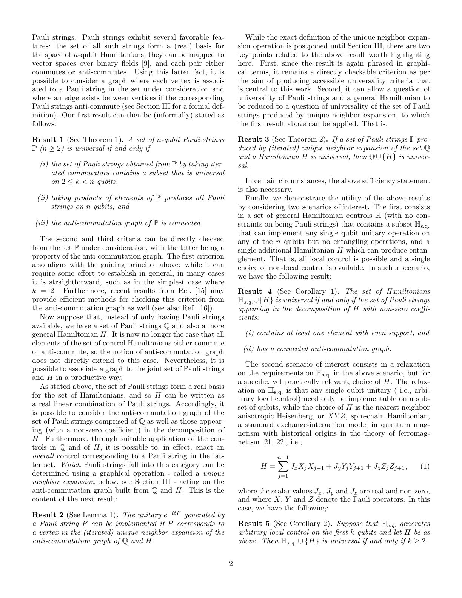
<figcaption class="paper-figure-caption"><b>Fig 1.</b> Low-resolution page preview, page 2</figcaption>
</figure>
<figure class="paper-figure-card">
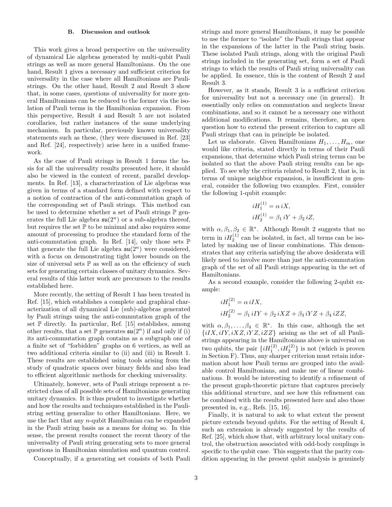
<figcaption class="paper-figure-caption"><b>Fig 2.</b> Low-resolution page preview, page 3</figcaption>
</figure>
<figure class="paper-figure-card">
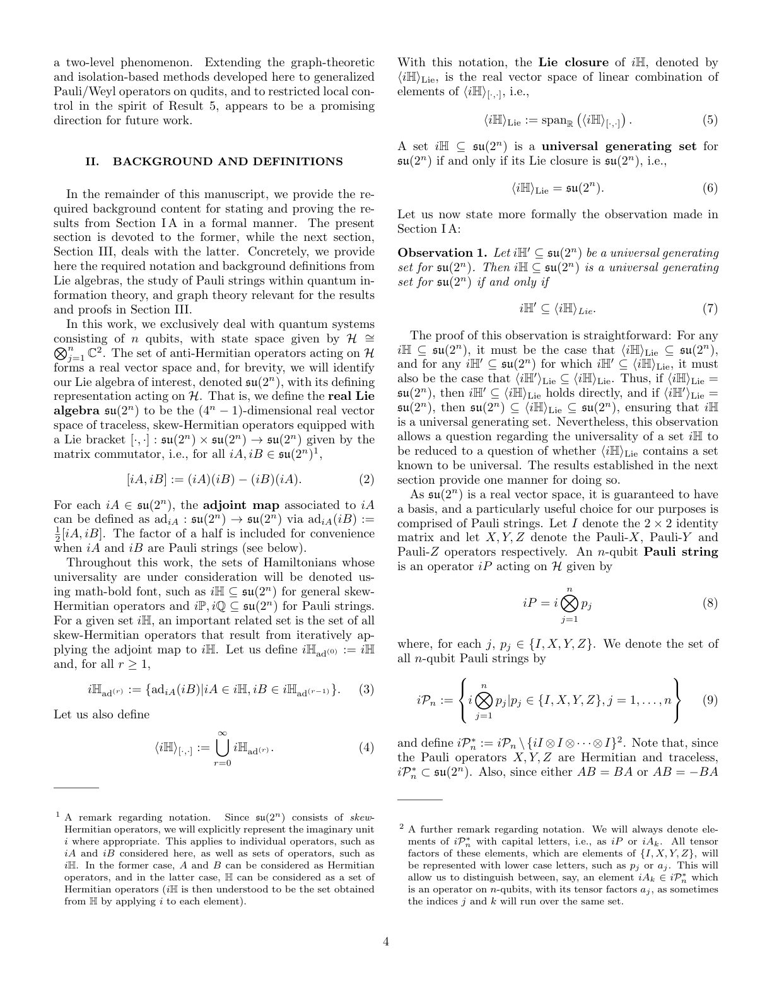
<figcaption class="paper-figure-caption"><b>Fig 3.</b> Low-resolution page preview, page 4</figcaption>
</figure>
<figure class="paper-figure-card">
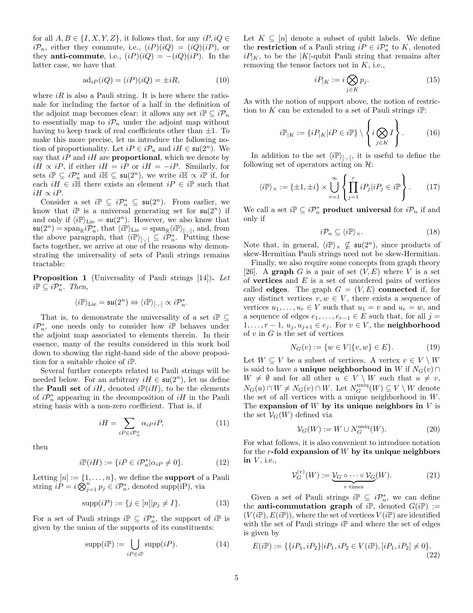
<figcaption class="paper-figure-caption"><b>Fig 4.</b> Low-resolution page preview, page 5</figcaption>
</figure>
<figure class="paper-figure-card">
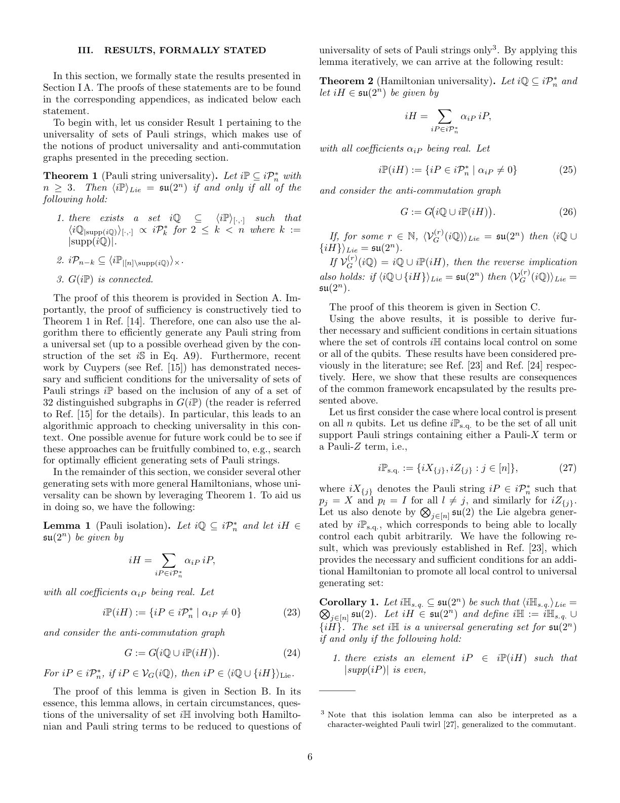
<figcaption class="paper-figure-caption"><b>Fig 5.</b> Low-resolution page preview, page 6</figcaption>
</figure>
</div>

<p><strong>Summary.</strong> This theoretical paper develops necessary and sufficient conditions for a set of Pauli Hamiltonians to generate universal quantum computation on $n$ qubits. It achieves this by translating the problem into analyzing the structure and connectivity of the anti-commutation graph associated with the generators within the Lie algebra $\mathfrak{su}(2^n)$. The results provide powerful tools for assessing hardware feasibility.</p>
<p><strong>Why it may be interesting.</strong> This work provides rigorous, mathematically precise criteria—rooted in algebraic topology and graph theory—to predict the computational power of physical quantum hardware architectures based solely on their native coupling terms.</p>
<details>
<summary>Detailed structure</summary>
<p><strong>Main problem.</strong> The central problem is establishing necessary and sufficient conditions for a set of Hamiltonians (controls) to generate universal quantum computation on $n$ qubits.</p>
<p><strong>Main result.</strong> Universality can be characterized by graph-theoretic properties, specifically the connectivity of the anti-commutation graph formed by the generating Pauli strings. For general Hamiltonians, universality requires structural conditions related to the Pauli expansion and local control capabilities.</p>
<p><strong>Method.</strong> The analysis employs techniques from Lie algebra theory applied to quantum operators represented as Pauli strings ($\mathfrak{su}(2^n)$). Key tools include analyzing the anti-commutation graph $G(\cdot)$ and utilizing commutator relations to determine if the generated algebra spans the full $\mathfrak{su}(2^n)$.</p>
<p><strong>Model / system.</strong> The system is an $n$-qubit quantum processor whose dynamics are governed by Hamiltonians composed of Pauli strings. The focus is on determining when the Lie algebra generated by these controls equals the full algebra $\mathfrak{su}(2^n)$.</p>
<p><strong>Key observables.</strong> The primary observable is whether the generated Lie algebra, $\langle 	ext{iH} 
angle_{	ext{Lie}}$, spans the entire target algebra $\mathfrak{su}(2^n)$. Connectivity of the anti-commutation graph $G(\cdot)$ is a crucial diagnostic.</p>
<p><strong>Important parameters / regimes.</strong> The number of qubits ($n$), the structure of the control set (Pauli strings vs. general Hamiltonians), and the connectivity/support properties of the generators are critical parameters.</p>
<p><strong>Assumptions / limitations.</strong> The analysis often relies on established results regarding simple Lie algebras ($\mathfrak{su}(N)$) and assumes that the problem can be effectively reduced to analyzing the Pauli string basis expansion of the Hamiltonian.</p>
<p><strong>Figures summary.</strong> Not specified in the notes, but the structure implies figures illustrating graph connectivity (anti-commutation graphs) and algebraic inclusions between generated subalgebras.</p>
<p><strong>Paper structure.</strong> The paper develops criteria sequentially: first for pure Pauli strings ($  ext{iP}$), then extending to combinations involving general Hamiltonians ($H$), culminating in specific corollaries for local control scenarios. The structure moves from necessary conditions (e.g., graph connectivity) to sufficient constructions.</p>
</details>
<details>
<summary>Abstract</summary>
<p>Any quantum computation consists of a sequence of unitary evolutions described by a finite set of Hamiltonians. For the case where this set consists of only products of Pauli operators, known as Pauli strings, we provide a necessary and sufficient condition for it to generate $\mathfrak{su}(2^n)$, i.e., to be universal for quantum computation on $n$ qubits. When combining Pauli strings with a general Hamiltonian, we show a sufficient (and in certain circumstances even necessary) condition for universality based on the Pauli-basis expansion of the Hamiltonian. As an application of these results, we prove two corollaries: (i) a necessary and sufficient condition for the universality of a general Hamiltonian given arbitrary single-qubit control on all qubits, and (ii) the universality of an XYZ Heisenberg Hamiltonian with local control of just two adjacent qubits.</p>
</details>
<p><sub><a href="#top">↑ back to top</a></sub></p>

<p><a id="paper-2606.11478"></a></p>
<h3 id="phase-pauli-hierarchical-assembly-on-subdivided-elements-for-quantum-compatible-operator-synthesis"><a href="http://arxiv.org/abs/2606.11478v1">PHASE: Pauli Hierarchical Assembly on Subdivided Elements for Quantum-Compatible Operator Synthesis</a></h3>
<p><strong>Authors:</strong> Tillman Philo, Caglar Oskay<br>
<strong>Type:</strong> theory · <strong>Category:</strong> quantum information and computing · <strong>PDF:</strong> <a href="https://arxiv.org/pdf/2606.11478v1">https://arxiv.org/pdf/2606.11478v1</a><br>
<strong>Analysis basis:</strong> full PDF text, analyzed in chunks
<strong>Topic relevance:</strong> <code>analog quantum simulation</code> <strong>1/5</strong> · <code>methods for driven-dissipative</code> <strong>1/5</strong></p>
<div class="figure-strip-hint">↔ Scroll figures horizontally</div>
<div class="paper-figures-scroll">
<figure class="paper-figure-card">
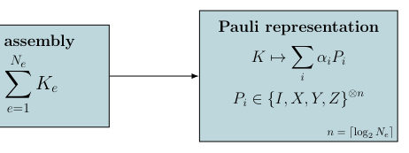
<figcaption class="paper-figure-caption"><b>Fig 1.</b> Figure 1: Quantum-compatible finite element assembly.</figcaption>
</figure>
<figure class="paper-figure-card">
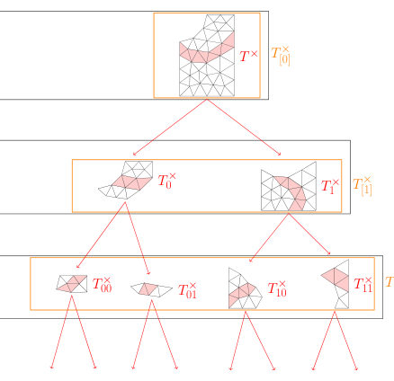
<figcaption class="paper-figure-caption"><b>Fig 2.</b> Figure 2: Recursive separator hierarchy and associated cut sets.</figcaption>
</figure>
<figure class="paper-figure-card">
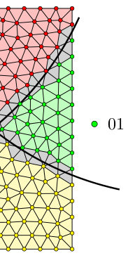
<figcaption class="paper-figure-caption"><b>Fig 3.</b> Figure 3: Illustration of recursive geometric partitioning and binary prefix labeling.</figcaption>
</figure>
<figure class="paper-figure-card">
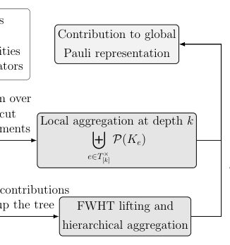
<figcaption class="paper-figure-caption"><b>Fig 4.</b> Figure 4: Dual assembly paths for hierarchical pauli decomposition of cut elements.</figcaption>
</figure>
<figure class="paper-figure-card">
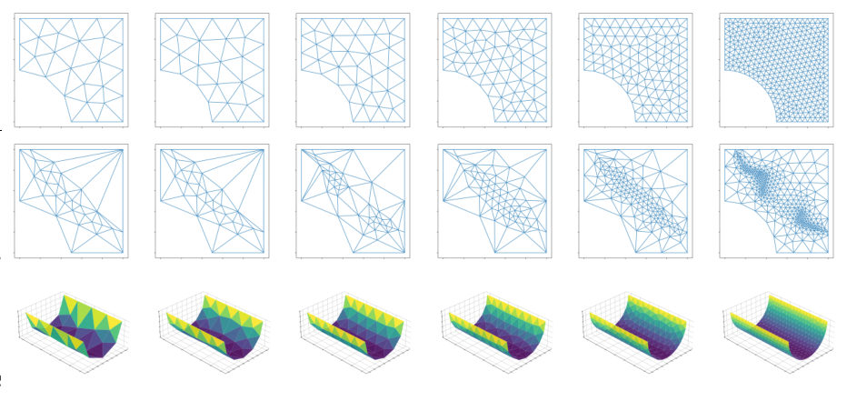
<figcaption class="paper-figure-caption"><b>Fig 5.</b> Figure 5: Meshes A, B and C at varying levels of refinement for empirical PHASE runtime testing.</figcaption>
</figure>
</div>

<p><strong>Summary.</strong> The paper introduces PHASE, an algorithm designed to efficiently decompose large finite element stiffness matrices into the Pauli basis required for quantum simulation. By leveraging the geometric structure of the mesh through recursive partitioning and combining advanced algebraic techniques like FWHT, it drastically reduces the exponential computational cost associated with naive Pauli expansions.</p>
<p><strong>Why it may be interesting.</strong> This work provides a crucial algorithmic breakthrough for simulating quantum systems derived from classical PDEs, offering a pathway to scale quantum simulations beyond current resource limitations by respecting underlying physical geometry.</p>
<details>
<summary>Detailed structure</summary>
<p><strong>Main problem.</strong> The core challenge is efficiently decomposing large, geometrically structured finite element stiffness matrices into the Pauli basis for quantum-compatible operator synthesis.</p>
<p><strong>Main result.</strong> The proposed PHASE algorithm achieves a dimension-dependent reduction in the exponential scaling exponent of the assembly complexity from $2^{2\lceil\log_2 N
ceil}$ to $2^{\gamma_d \lceil\log_2 N
ceil}$ with $\gamma_d < 2$.</p>
<p><strong>Method.</strong> PHASE uses a hierarchical, geometry-aware approach combining recursive mesh partitioning (domain decomposition) with a hybrid algebraic strategy involving Tensorized Pauli Decomposition and Fast Walsh-Hadamard Transform aggregation.</p>
<p><strong>Model / system.</strong> The model is the global stiffness matrix ($K$) derived from solving partial differential equations using the Finite Element Method (FEM). This classical operator is mapped onto an $n$-qubit Hilbert space via its unique Pauli basis expansion.</p>
<p><strong>Key observables.</strong> Pauli coefficients ($\alpha_P$), asymptotic complexity scaling exponents ($\gamma_d, \hat{\gamma}$), and cut element counts ($|T_{	imes}^{[k]}|$).</p>
<p><strong>Important parameters / regimes.</strong> Number of degrees of freedom ($N$), number of qubits ($n = \lceil\log_2 N
ceil$), mesh regularity, and partition imbalance ratio ($\delta$).</p>
<p><strong>Assumptions / limitations.</strong> The analysis assumes standard assumptions for conforming, shape-regular, quasi-uniform meshes; the complexity bounds are derived under specific conditions regarding partition quality.</p>
<p><strong>Figures summary.</strong> Figures illustrate the recursive separator hierarchy and associated cut sets in the mesh, as well as comparisons of empirical vs. theoretical scaling exponents ($\hat{\gamma}$ vs. $\gamma_{\star}, \gamma_{avg}$).</p>
<p><strong>Paper structure.</strong> The paper systematically develops the geometric decomposition (recursive partitioning) to map FEM structure onto a binary address system, then details the hybrid algebraic assembly process using TPD and FWHT aggregation across different depths of the hierarchy.</p>
</details>
<details>
<summary>Abstract</summary>
<p>Efficiently decomposing finite element stiffness matrices into the Pauli basis is challenging due to the exponential growth of Pauli strings with problem size. A naive Pauli expansion requires $Θ(8^{\lceil \log_2 N \rceil})$ operations, where $N$ denotes the number of degrees of freedom, rendering direct decomposition infeasible for large systems. Existing approaches exploit algebraic sparsity or operator structure but do not incorporate the geometric organization intrinsic to finite element discretizations, and consequently exhibit poor scaling for stiffness matrices. To address this problem, we introduce PHASE, a hierarchical, geometry-aware Pauli decomposition algorithm that leverages recursive mesh partitioning to organize element contributions across multiple spatial scales. PHASE employs a hybrid strategy that combines full- and reduced-space Tensorized Pauli Decomposition with Fast Walsh-Hadamard Transform-based aggregation to assemble global Pauli coefficients efficiently. We show that this approach yields a dimension-dependent reduction in the exponential scaling exponent of Pauli assembly asymptotic complexity relative to existing methods, reducing the cost from $2^{2{\lceil \log_2 N \rceil}}$ to $2^{γ_d{\lceil \log_2 N \rceil}}$ with $γ_d < 2$ under standard mesh regularity and balanced partition assumptions. These results substantially improve the feasibility of quantum-compatible operator synthesis for large-scale finite element models.</p>
</details>
<p><sub><a href="#top">↑ back to top</a></sub></p>

<p><a id="paper-2606.12297"></a></p>
<h3 id="a-post-selected-quantum-model-of-cosmic-acceleration"><a href="http://arxiv.org/abs/2606.12297v1">A post-selected quantum model of cosmic acceleration</a></h3>
<p><strong>Authors:</strong> Dimitris Lionas, Charis Anastopoulos, Konstantinos Gourgouliatos<br>
<strong>Type:</strong> theory · <strong>Category:</strong> other · <strong>PDF:</strong> <a href="https://arxiv.org/pdf/2606.12297v1">https://arxiv.org/pdf/2606.12297v1</a><br>
<strong>Analysis basis:</strong> full PDF text, analyzed in chunks
<strong>Topic relevance:</strong> <code>quantum measurements</code> <strong>1/5</strong></p>
<div class="figure-strip-hint">↔ Scroll figures horizontally</div>
<div class="paper-figures-scroll">
<figure class="paper-figure-card">
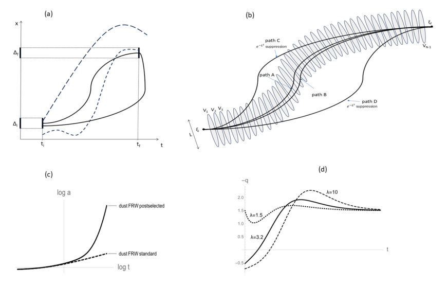
<figcaption class="paper-figure-caption"><b>Fig 1.</b> Figure 1: Post-selected cosmology and emergence of effective dynamics. (a) Post-selection: only histories with initial conditions in a region ∆i at time ti and final conditions in a re- gion ∆f at time tf contribute to the probabilities. (b) Coarse-graining: probabilities refer to phase-space tubes of characteristic size L. For fixed initial and final conditions, proba- bility concentrates on a single tube, while alternative histories are exponentially suppressed. (c) Comparison with standard evolution: the dynamics agrees with standard evolution at early times but deviates at late times as post-selection effects become significant. (d) Cosmic acceleration: the parameter −q = ¨aa/˙a2 as a...</figcaption>
</figure>
<figure class="paper-figure-card">
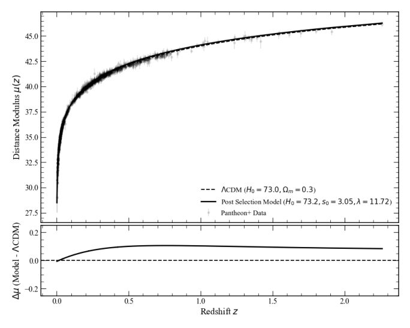
<figcaption class="paper-figure-caption"><b>Fig 2.</b> Figure 2: Hubble diagram for the Pantheon+ Type Ia Supernovae dataset (top) and the corresponding residuals relative to the baseline ΛCDM model (bottom).</figcaption>
</figure>
<figure class="paper-figure-card">
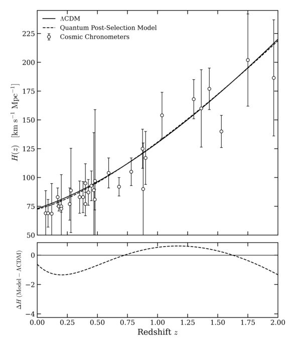
<figcaption class="paper-figure-caption"><b>Fig 3.</b> Figure 3: Evolution of the Hubble parameter H(z) as predicted by the post-selection quan- tum model compared to 31 Cosmic Chronometer data points. The lower panel displays the residuals relative to the standard ΛCDM model.</figcaption>
</figure>
<figure class="paper-figure-card">
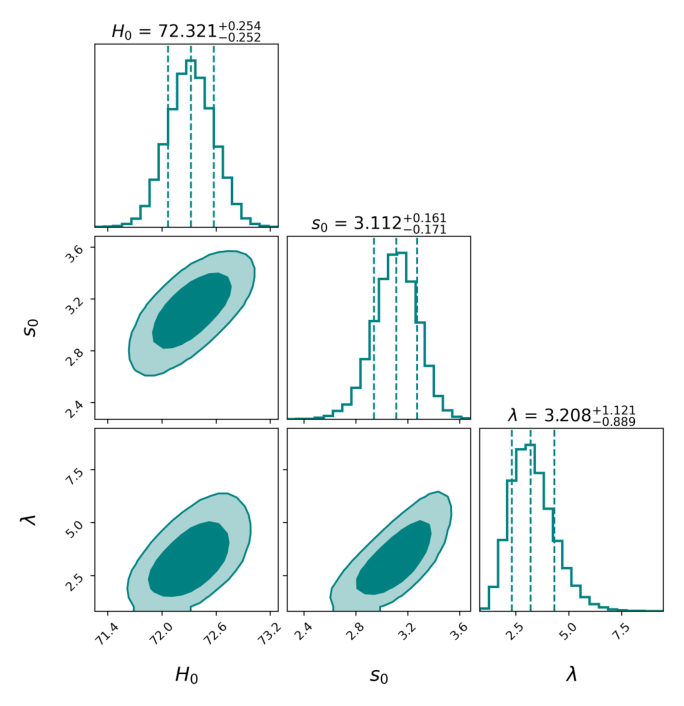
<figcaption class="paper-figure-caption"><b>Fig 4.</b> Figure 4: Posterior distributions and parameter correlations derived from the Pantheon+ SNIa dataset.</figcaption>
</figure>
<figure class="paper-figure-card">
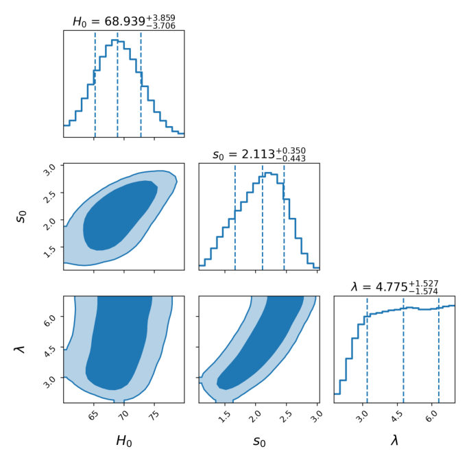
<figcaption class="paper-figure-caption"><b>Fig 5.</b> Figure 5: Posterior distributions derived from the CC dataset, highlighting the degeneracy between H0 and the quantum parameters.</figcaption>
</figure>
</div>

<p><strong>Summary.</strong> This work presents a novel cosmological model where cosmic acceleration is explained not by dark energy, but as an emergent effect of quantum post-selection. By fitting this POQCO model against supernova and chronometer data, the authors claim to provide a theoretically grounded alternative to $\Lambda$CDM that naturally explains late-time acceleration.</p>
<p><strong>Why it may be interesting.</strong> While focused on cosmology, the core methodology—deriving macroscopic dynamics from fundamental quantum selection rules (post-selection)—is conceptually related to how complex emergent phenomena can arise from underlying quantum constraints, which has parallels in open quantum systems theory.</p>
<details>
<summary>Detailed structure</summary>
<p><strong>Main problem.</strong> The paper addresses the fundamental origin of cosmic acceleration, which is conventionally attributed to a cosmological constant or dark energy within the standard $\Lambda$CDM model.</p>
<p><strong>Main result.</strong> It proposes that late-time cosmic acceleration can arise naturally from quantum post-selection effects in cosmology, yielding an expansion history consistent with current data without invoking new energy components or modifying General Relativity.</p>
<p><strong>Method.</strong> The authors develop a minimal predictive cosmological model based on Post-selected Quantum Cosmology (POQCO), deriving effective dynamics that are then constrained by fitting to Type Ia supernova and cosmic chronometer observational data.</p>
<p><strong>Model / system.</strong> The system is the Friedmann-Lemaître-Robertson-Walker (FLRW) cosmology, analyzed using a quantum framework incorporating post-selection principles. The resulting effective evolution law is highly constrained, depending on at most two parameters beyond standard Friedmann dynamics.</p>
<p><strong>Key observables.</strong> Cosmic acceleration history, present-day jerk parameter ($j_0$), and the Hubble function $H(z)$ derived from Pantheon+ supernovae and cosmic chronometer measurements.</p>
<p><strong>Important parameters / regimes.</strong> The model is parameterized by constants related to post-selection ($\lambda$, $eta$) and includes parameters like the effective sound-speed ($\kappa_0$) and the matter density parameter ($\Omega_m$).</p>
<p><strong>Assumptions / limitations.</strong> The analysis assumes that early-time cosmic evolution reduces to standard radiation and matter domination, and it utilizes quantum post-selection as the source of late-time dynamics.</p>
<p><strong>Figures summary.</strong> Figures illustrate the comparison between POQCO predictions and $\Lambda$CDM for $H(z)$ (Hubble diagram), showing residuals relative to $\Lambda$CDM, and display posterior probability distributions from SNIa data.</p>
<p><strong>Paper structure.</strong> The paper establishes the problem of cosmic acceleration, introduces the theoretical framework of Post-selected Quantum Cosmology (POQCO) derived from quantum principles, develops the effective cosmological equations, and finally performs a joint statistical analysis using both supernova and cosmic chronometer datasets to constrain model parameters.</p>
</details>
<details>
<summary>Abstract</summary>
<p>The origin of cosmic acceleration remains a central problem in cosmology, commonly attributed to a cosmological constant within the $Λ$CDM model or to dynamical dark energy. Here, we develop an alternative approach in which acceleration emerges from quantum post-selection, a standard feature of quantum theory that is not usually incorporated into cosmological modelling. While quantum theory admits both pre-selected and post-selected ensembles, quantum cosmological models are almost exclusively formulated in terms of initial conditions. Building on previous work on post-selected quasiclassical dynamics, we construct a minimal predictive cosmological model in which post-selection and coarse-graining generate effective late-time acceleration without introducing a cosmological constant, dark energy, or modifications of general relativity. The resulting expansion history is highly constrained theoretically and depends on at most two parameters beyond standard Friedmann evolution. Confrontation with type Ia supernova and cosmic chronometer data yields statistically competitive fits while naturally avoiding the coincidence problem. The model also reproduces the standard radiation- and matter-dominated behaviour at early times and predicts a present-day jerk parameter significantly different from the $Λ$CDM value. These results suggest that cosmic acceleration may arise as a macroscopic quantum cosmological effect rather than from additional cosmological fluids or modified gravitational dynamics.</p>
</details>
<p><sub><a href="#top">↑ back to top</a></sub></p>

<p><a id="paper-2606.11965"></a></p>
<h3 id="exact-distribution-of-the-output-of-a-deep-layered-machine"><a href="http://arxiv.org/abs/2606.11965v1">Exact distribution of the output of a deep-layered machine</a></h3>
<p><strong>Authors:</strong> Thomas M. A. Fink<br>
<strong>Type:</strong> theory · <strong>Category:</strong> disordered systems and neural networks · <strong>PDF:</strong> <a href="https://arxiv.org/pdf/2606.11965v1">https://arxiv.org/pdf/2606.11965v1</a><br>
<strong>Analysis basis:</strong> full PDF text, analyzed in chunks
<strong>Topic relevance:</strong> <code>methods for driven-dissipative</code> <strong>1/5</strong></p>
<div class="figure-strip-hint">↔ Scroll figures horizontally</div>
<div class="paper-figures-scroll">
<figure class="paper-figure-card">
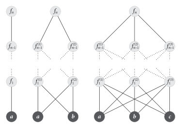
<figcaption class="paper-figure-caption"><b>Fig 1.</b> FIG. 1: Deep-layered machines. In a network of k arguments (a, b, . . .), each node depends on all k of the arguments below it, each of which depends on the k arguments below it, and so on, for a total of n levels. The goal of this paper is to determine the probability distribution of the global output Boolean function F(a, b, . . .) given a random assignment of local Boolean functions to the fs at the light gray nodes.</figcaption>
</figure>
<figure class="paper-figure-card">
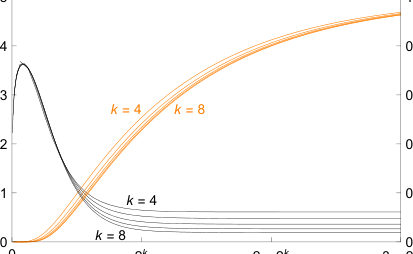
<figcaption class="paper-figure-caption"><b>Fig 2.</b> FIG. 2: Critical network depth. When the network depth reaches nc ≃2k, the Hamming weight distribution q(n) has flattened out, but true and false have yet to dominate. At this crossover, the output distribution p(n) is maximally U-shaped in absolute terms. The orange curves show the probability that the output is true or false as a function of n and for various k; they approach 1 with n. The black curves show the standard deviation of the interior of q normalized by its maximum value, as a function of n and for various k. Lower standard deviation means q is flatter. The curves decrease with n to an asymptote that approaches 0 with k.</figcaption>
</figure>
<figure class="paper-figure-card">
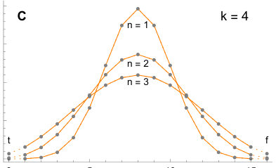
<figcaption class="paper-figure-caption"><b>Fig 3.</b> FIG. 3: Experiments confirm our predictions. We com- pare our prediction of the probability q(n) of the output func- tion (lines) with computer experiments (points), for various values of the number of arguments k and network depth n. The vertical axis is the probability of an output with a given Hamming weight w; outputs with the same w have the same probability. In all cases, our experiments agree with our theory exactly or, when sampling, to within statistical significance. A For k = 2, we enumerated all of the configurations up to network depth n = 5. As n grows, the distribution of the out- put flattens out and falls. But for true and false (w = 4 and w = 0), the probabilities approach...</figcaption>
</figure>
</div>

<p><strong>Summary.</strong> This paper rigorously derives the exact probability distribution of the output function for a deep-layered Boolean machine. It shows that while initial layers create complex structure, increasing depth causes the system's output to rapidly lose information and collapse into a simple coin toss between true and false. This highlights a finite structural limit inherent in purely compositional computation.</p>
<p><strong>Why it may be interesting.</strong> The study provides an exactly solvable null model demonstrating how complex, structured information processing (like deep learning) can exhibit predictable, finite-depth limitations governed by spectral properties, which has parallels in understanding decoherence or complexity limits in quantum systems.</p>
<details>
<summary>Detailed structure</summary>
<p><strong>Main problem.</strong> The primary goal is deriving the exact finite-depth probability distribution of the global output function of a deep-layered machine.</p>
<p><strong>Main result.</strong> The output distribution exhibits a crossover behavior: initially biased towards low/high Hamming weights, it eventually collapses to an almost equal coin toss between the constant 'true' and 'false' outputs as depth increases.</p>
<p><strong>Method.</strong> The analysis uses linear recurrence relations derived from a transition matrix approach applied to the probability vector over the Hamming weight of the output function.</p>
<p><strong>Model / system.</strong> The model is a deep-layered machine where each node computes an arbitrary Boolean function based on all nodes in the preceding layer. The system is characterized by its width $k$ and depth $n$.</p>
<p><strong>Key observables.</strong> The probability distribution vector $\mathbf{q}(n)$ over the Hamming weight $w$, and the probabilities of the constant functions (true/false).</p>
<p><strong>Important parameters / regimes.</strong> Width ($k$), Depth ($n$), Crossover depth ($n_c \propto 2^k$).</p>
<p><strong>Assumptions / limitations.</strong> The analysis assumes symmetry such that all local functions sharing the same Hamming weight contribute equally to the probability evolution.</p>
<p><strong>Figures summary.</strong> Figures illustrate the structure of the machines and show the evolution of true/false probabilities (orange curves) versus network depth $n$, confirming a crossover at $n_c \simeq 2k$.</p>
<p><strong>Paper structure.</strong> The paper establishes the mathematical framework using transition matrices, analyzes the spectral properties to find dominant eigenvalues, derives the time evolution $\mathbf{q}(n) = \mathbf{A}^{n-1} \mathbf{q}(1)$, and then interprets the physical meaning of the resulting crossover behavior.</p>
</details>
<details>
<summary>Abstract</summary>
<p>Deep-layered machines, in which each node computes a Boolean function of all nodes below it, underpin deep learning and digital computation. Yet the statistics of their global output function remain poorly understood. We derive the exact finite-depth distribution of the output of a machine with width $k$ and depth $n$. The distribution depends only on the Hamming weight of the output, and as $n$ increases favors functions with low and high Hamming weights. But this bias peaks at a crossover depth proportional to $2^k$ before collapsing onto the constant functions true and false.</p>
</details>
<p><sub><a href="#top">↑ back to top</a></sub></p>

<p><a id="paper-2606.11484"></a></p>
<h3 id="handbook-of-error-correcting-codes"><a href="http://arxiv.org/abs/2606.11484v1">Handbook of Error-Correcting Codes</a></h3>
<p><strong>Authors:</strong> Victor V. Albert, Philippe Faist<br>
<strong>Type:</strong> theory · <strong>Category:</strong> quantum information and computing · <strong>PDF:</strong> <a href="https://arxiv.org/pdf/2606.11484v1">https://arxiv.org/pdf/2606.11484v1</a><br>
<strong>Analysis basis:</strong> full PDF text, analyzed in chunks
<strong>Topic relevance:</strong> <code>entanglement &amp; information structure</code> <strong>1/5</strong></p>
<div class="figure-strip-hint">↔ Scroll figures horizontally</div>
<div class="paper-figures-scroll">
<figure class="paper-figure-card">
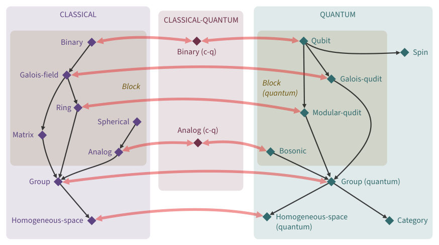
<figcaption class="paper-figure-caption"><b>Fig 1.</b> FIG. 1: The EC Zoo consists of three Domains, with each Domain consisting of several Kingdoms. Codes are primarily organized by the alphabet (for quantum, physical space) used to define the codes; each alphabet is a Kingdom (diamonds). Horizontal red arrows show correspondences between Kingdoms in different Domains; e.g., qubit codes are quantum analogues of binary codes. Vertical arrows relate Kingdoms to each other; e.g., the Qubit Kingdom descends from the Modular-qudit Kingdom because qubits are a special case of qudits.</figcaption>
</figure>
<figure class="paper-figure-card">
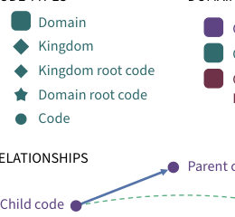
<figcaption class="paper-figure-caption"><b>Fig 2.</b> FIG. 3: Elements that appear in a code graph</figcaption>
</figure>
<figure class="paper-figure-card">

<figcaption class="paper-figure-caption"><b>Fig 3.</b> FIG. 2: The EC Zoo processing pipeline. The code data is maintained as a repository of structured YAML files, which are both human-editable and machine-readable. The files are parsed into an in-memory object model, with JavaScript objects repre- senting the zoo instance, code instances as well as lists, domains, and kingdoms. The objects expose methods for computed properties, such as finding the parent kingdom of a code, exposing an API that enables powerful processing with custom code. Our code can generate our HTML website (https://errorcorrectionzoo.org/) , static or interactive code graphs (https://errorcorrectionzoo.org/code_graph) , or even a print-ready handbook.</figcaption>
</figure>
<figure class="paper-figure-card">
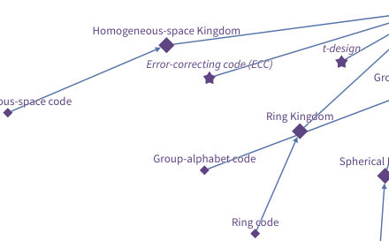
<figcaption class="paper-figure-caption"><b>Fig 4.</b> FIG. 4: Classical Domain.</figcaption>
</figure>
<figure class="paper-figure-card">
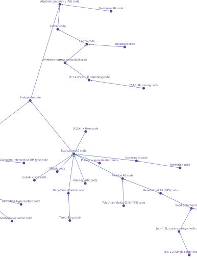
<figcaption class="paper-figure-caption"><b>Fig 5.</b> FIG. 5: Algebraic-geometry codes (view online).</figcaption>
</figure>
</div>

<p><strong>Summary.</strong> This paper introduces 'The Error Correction Zoo,' a comprehensive, structured reference manual for all known classical and quantum error-correcting codes. It organizes these codes taxonomically based on their mathematical support—ranging from simple binary systems to complex bosonic or group structures. This resource aims to be the definitive guide for researchers needing to select appropriate protective schemes for various physical implementations.</p>
<p><strong>Why it may be interesting.</strong> This work provides a crucial meta-framework for quantum information theorists, mapping out the landscape of existing error correction techniques by linking them explicitly to underlying algebraic or physical structures (e.g., lattices, groups).</p>
<details>
<summary>Detailed structure</summary>
<p><strong>Main problem.</strong> The core problem is developing a comprehensive, structured reference (the Error Correction Zoo) to catalog methods for protecting classical or quantum information from errors during storage, transmission, and computation.</p>
<p><strong>Main result.</strong> The authors propose a highly structured framework organizing codes into Domains (Classical/Quantum) and Kingdoms based on underlying mathematical structures, providing both a rigorous reference and a practical aid for code discovery.</p>
<p><strong>Method.</strong> The methodology involves creating a hierarchical database structure (the Zoo) using YAML data files, processed through an in-memory object model to generate structured HTML outputs.</p>
<p><strong>Model / system.</strong> The system models information protection across classical and quantum channels. Codes are classified based on their physical support: qubits, qudits, bosonic modes, or algebraic structures like groups and lattices.</p>
<p><strong>Key observables.</strong> Code distance ($d$), code rate, threshold values ($    ext{threshold}$), and capacity thresholds.</p>
<p><strong>Important parameters / regimes.</strong> Alphabet size (binary, $\mathfrak{q}$-ary), physical dimensions (qubits, qudits, bosonic modes), and algebraic parameters defining the underlying structure.</p>
<p><strong>Assumptions / limitations.</strong> The selection of an optimal code is case-by-case; quantum error correction must contend with limitations like the no-cloning theorem compared to classical systems.</p>
<p><strong>Figures summary.</strong> Figures illustrate the EC Zoo structure, showing Domains containing Kingdoms organized by alphabet/physical space, and depict the data processing pipeline from YAML input to final HTML output.</p>
<p><strong>Paper structure.</strong> The paper is structured around presenting the conceptual framework of the Error Correction Zoo. It details the taxonomy (Domains $
ightarrow$ Kingdoms), the mathematical relationships between codes, and the computational pipeline used to maintain this complex reference resource.</p>
</details>
<details>
<summary>Abstract</summary>
<p>Barcode scans, clear phone calls, reliable data storage, satellite communication, and large-scale quantum computation are all made possible by error correction. We present a handbook version of The Error Correction Zoo, a curated reference of methods for protecting classical or quantum information from errors during storage and transmission. The handbook includes descriptions of these error-correcting codes and a classification according to the symbols they use. It also catalogues relations among codes and related objects such as sphere packings, lattices, designs, groups, and classical and quantum phases of matter. The collection is intended both as a rigorous reference and as a practical aid for tracing the web of code relationships and uncovering new connections.</p>
</details>
<p><sub><a href="#top">↑ back to top</a></sub></p>

<p><a id="paper-2606.12098"></a></p>
<h3 id="quantum-ergodicity-and-semiclassical-measures-mathematical-results"><a href="http://arxiv.org/abs/2606.12098v1">Quantum ergodicity and semiclassical measures: mathematical results</a></h3>
<p><strong>Authors:</strong> Stéphane Nonnenmacher<br>
<strong>Type:</strong> theory · <strong>Category:</strong> other · <strong>PDF:</strong> <a href="https://arxiv.org/pdf/2606.12098v1">https://arxiv.org/pdf/2606.12098v1</a><br>
<strong>Analysis basis:</strong> full PDF text, analyzed in chunks
<strong>Topic relevance:</strong> <code>Keldysh / 2PI / non-Gaussian methods</code> <strong>1/5</strong></p>
<div class="figure-strip-hint">↔ Scroll figures horizontally</div>
<div class="paper-figures-scroll">
<figure class="paper-figure-card">
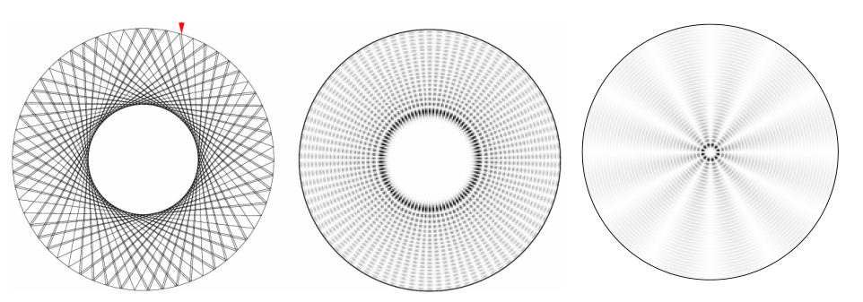
<figcaption class="paper-figure-caption"><b>Fig 1.</b> Figure 1 Left: one long ray inside the circle billiard (the red arrow is the starting point). Center: one eigenmode, with angular momentum k equal to that of the ray (the grey hue corresponds to the intensity of |un(x)|2). Right: eigenmode of the cirle with smaller angular momentum. Courtesy of Arnd B¨acker.</figcaption>
</figure>
<figure class="paper-figure-card">
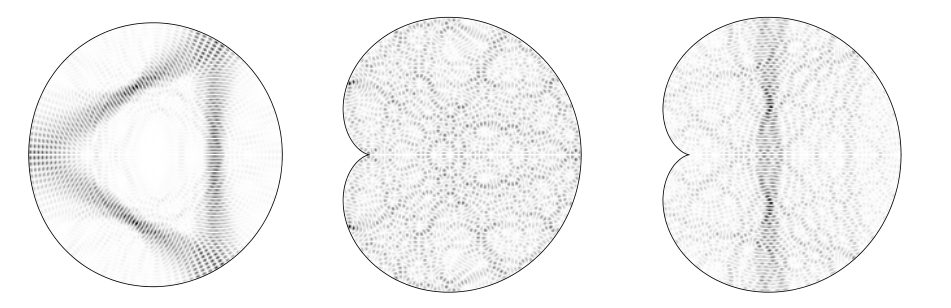
<figcaption class="paper-figure-caption"><b>Fig 2.</b> Figure 2 High frequency eigenmodes for a small deformation of the circle (left), and two eigenmodes of the cardioid. Courtesy of Arnd B¨acker.</figcaption>
</figure>
<figure class="paper-figure-card">
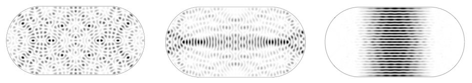
<figcaption class="paper-figure-caption"><b>Fig 3.</b> Figure 3 3 eigenmodes of the stadium billiard, at similar eigenfrequencies. Left: an equidistributed eigenmode. Center: a scar along the horizontal periodic orbit. Right: a strong scar along the family of bouncing ball orbits. Courtesy of Eduardo Vergini.</figcaption>
</figure>
<figure class="paper-figure-card">
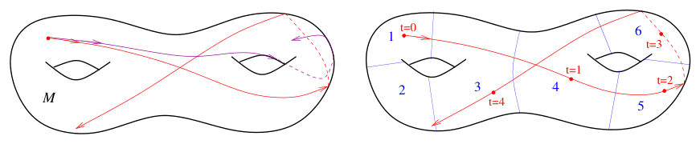
<figcaption class="paper-figure-caption"><b>Fig 4.</b> Figure 4 Left: a pair of orbits issued from the same point of a surface M of negative curvature, departing fast from one another. Right: a partition of M allows to differentiate points according to their “symbolic history”. The indicated point follows the symbolic path α = 14563 . . .</figcaption>
</figure>
<figure class="paper-figure-card">
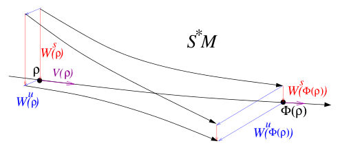
<figcaption class="paper-figure-caption"><b>Fig 5.</b> Figure 5 A phase space picture of a reference orbits {Φt(ρ)} and three nearby orbits, two of them along the stable and unstable manifolds of ρ.</figcaption>
</figure>
</div>

<p><strong>Summary.</strong> This paper provides a deep mathematical review of Quantum Chaos, focusing on how the semiclassical distribution of high-frequency eigenmodes relates to the underlying classical geodesic flow. It rigorously proves results like Quantum Ergodicity and establishes lower bounds on the entropy of these measures using advanced tools from microlocal analysis and fractal geometry.</p>
<p><strong>Why it may be interesting.</strong> This work is foundational for understanding how classical chaotic dynamics constrain quantum behavior in the high-energy limit, providing rigorous mathematical tools applicable to wave phenomena in complex geometries.</p>
<details>
<summary>Detailed structure</summary>
<p><strong>Main problem.</strong> The paper reviews results concerning the high-frequency eigenmodes of the Laplacian on manifolds with chaotic geodesic flow, focusing on their macroscopic distribution via semiclassical measures.</p>
<p><strong>Main result.</strong> It details the Quantum Ergodicity theorem and provides advanced tools (like pseudodifferential operators and Fractal Uncertainty Principles) to establish lower bounds on the Kolmogorov-Sinai entropy for these measures.</p>
<p><strong>Method.</strong> The primary methods involve semiclassical analysis, using $\hbar$-pseudodifferential operators ($   ext{Op}_\hbar(\chi)$) to test mass distribution in phase space ($T^*M$) and relating quantum expectation values to classical flow dynamics via Egorov's theorem.</p>
<p><strong>Model / system.</strong> The system is the Laplacian operator on compact Riemannian manifolds, particularly those with chaotic geodesic flow (e.g., negatively curved surfaces or billiards). The analysis connects the wave equation solutions ($u_n$) to the underlying classical Hamiltonian dynamics ($\Phi_t$).</p>
<p><strong>Key observables.</strong> Semiclassical measure ($\mu_{sc}$), Kolmogorov-Sinai entropy ($H_{KS}(\mu)$), and the expectation value $\langle u_n, 	ext{Op}_{\hbar_n}(\chi) u_n 
angle$ which measures mass distribution in phase space.</p>
<p><strong>Important parameters / regimes.</strong> High frequency limit ($\lambda_n 	o \infty$), semiclassical parameter ($\hbar 	o 0$), and the Lyapunov exponents/expansion rates of the geodesic flow.</p>
<p><strong>Assumptions / limitations.</strong> The analysis relies heavily on the quantum-classical correspondence (Egorov's theorem) and advanced tools like the Fractal Uncertainty Principle to control operator norms in phase space.</p>
<p><strong>Figures summary.</strong> Figures illustrate eigenstates for various billiards, comparing integrable vs. chaotic flow regimes; they also depict phase space concepts involving stable/unstable manifolds ($W^s, W^u$) used in the entropy calculations.</p>
<p><strong>Paper structure.</strong> The paper progresses from reviewing basic quantum chaos phenomena (eigenmodes, scarring) to establishing the core theorem (Quantum Ergodicity), and finally developing advanced mathematical machinery using pseudodifferential calculus and fractal geometry to prove strong lower bounds on the associated measures' entropies.</p>
</details>
<details>
<summary>Abstract</summary>
<p>In this chapter we review some results describing the high-frequency eigenmodes of the Laplacian on compact manifolds, or Euclidean domains, for which the geodesic flow is chaotic. We focus on the macroscopic distribution of these eigenmodes, which is described by the concept of semiclassical measure. The main result on the question is the Quantum Ergodicity theorem, originally due to Schnirelman. We provide the detailed proof of this theorem, including the adjustments necessary to treat the case of manifolds with boundary. We also discuss the Quantum Unique Ergodicity conjecture, and some progress towards this conjecture for strongly chaotic (Anosov) systems. In particular, we describe the constraints on admissible semiclassical measures, in terms of their Kolmogorov-Sinai entropy, as well as more recent delocalization results.</p>
</details>
<p><sub><a href="#top">↑ back to top</a></sub></p>

<p><a id="paper-2606.11843"></a></p>
<h3 id="quantum-iterative-approach-to-the-traveling-salesman-problem"><a href="http://arxiv.org/abs/2606.11843v1">Quantum iterative approach to the Traveling Salesman Problem</a></h3>
<p><strong>Authors:</strong> Arturo Rodríguez-Almazán, Guillermo Rivas, Ricardo S. Alonso, Daniela Falcó, Mir Amir Hosseini<br>
<strong>Type:</strong> theory · <strong>Category:</strong> quantum information and computing · <strong>PDF:</strong> <a href="https://arxiv.org/pdf/2606.11843v1">https://arxiv.org/pdf/2606.11843v1</a><br>
<strong>Analysis basis:</strong> full PDF text, analyzed in chunks
<strong>Topic relevance:</strong> <code>quantum measurements</code> <strong>1/5</strong></p>
<div class="figure-strip-hint">↔ Scroll figures horizontally</div>
<div class="paper-figures-scroll">
<figure class="paper-figure-card">
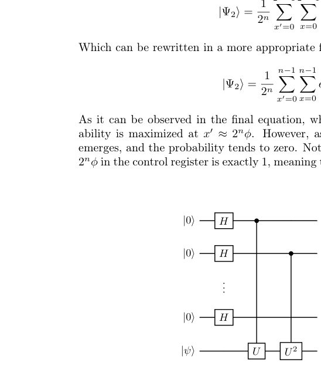
<figcaption class="paper-figure-caption"><b>Fig 1.</b> Figure 1: Schematic diagram representing the quantum circuit to perform Quantum Phase Esti- mation.</figcaption>
</figure>
<figure class="paper-figure-card">
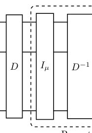
<figcaption class="paper-figure-caption"><b>Fig 2.</b> Figure 2: Schematic diagram representing the quantum circuit to perform the Grover-Long algo- rithm.</figcaption>
</figure>
<figure class="paper-figure-card">

<figcaption class="paper-figure-caption"><b>Fig 3.</b> Figure 3: Map presenting the four towns of Salamanca we are using as toy model and the shortest possible path between them.</figcaption>
</figure>
</div>

<p><strong>Summary.</strong> This paper proposes a novel quantum iterative algorithm to solve the NP-hard Traveling Salesman Problem by combining Quantum Phase Estimation and Grover's search. The approach encodes route costs as phases to be measured, iteratively refining the solution space until the minimum cost path is found. It provides theoretical complexity bounds and validates its feasibility using small-scale toy models.</p>
<p><strong>Why it may be interesting.</strong> This work directly applies advanced quantum algorithms (QPE, Amplitude Amplification) to a canonical hard optimization problem, providing a concrete roadmap for potential quantum speedups in combinatorial optimization relevant to future quantum hardware development.</p>
<details>
<summary>Detailed structure</summary>
<p><strong>Main problem.</strong> The paper addresses the Traveling Salesman Problem (TSP), a classical NP-hard optimization problem, by proposing a quantum computational approach.</p>
<p><strong>Main result.</strong> The authors developed a quantum iterative framework combining Quantum Phase Estimation (QPE) and Grover's search algorithm to solve TSP, achieving an expected complexity of O(m^2 log_2(m) log_2(1/ε) / sqrt{ε}).</p>
<p><strong>Method.</strong> The method involves encoding route costs as quantum phases evaluated by QPE, followed by iterative minimization using Amplitude Amplification (Grover-Long algorithm).</p>
<p><strong>Model / system.</strong> The model is abstractly defined within the framework of quantum computation, utilizing qubits to represent both the 'Cost' and the 'Route' state in a tensor product space.</p>
<p><strong>Key observables.</strong> The primary observable is the minimum total route cost, estimated by measuring the phase $\phi$ via QPE, and confirmed by the convergence of the Grover-Long iterations.</p>
<p><strong>Important parameters / regimes.</strong> Key parameters include the number of cities ($m$), the error tolerance ($\epsilon$), and the required number of qubits for state encoding ($d$).</p>
<p><strong>Assumptions / limitations.</strong> The analysis assumes that the initialization term in the complexity calculation is subdominant, and it relies on theoretical expectation values for its complexity bounds.</p>
<p><strong>Figures summary.</strong> Figures illustrate schematic quantum circuits for QPE and Grover-Long algorithms. Tables provide numerical results from toy model simulations demonstrating convergence to minimum cost routes for both symmetric and asymmetric TSP instances.</p>
<p><strong>Paper structure.</strong> The paper introduces the NP-hard nature of TSP, proposes the novel hybrid quantum algorithm (QPE + Grover-Long), provides a theoretical complexity analysis, demonstrates feasibility via small-scale case studies on toy models (including handling asymmetry), and concludes with discussions on scalability limitations.</p>
</details>
<details>
<summary>Abstract</summary>
<p>The Traveling Salesman Problem (TSP) is a classical NP-hard problem in combinatorial optimization, where determining the shortest route among a set of cities becomes computationally prohibitive as the problem size increases. This work explores quantum computing as an alternative approach to address this complexity. Unlike existing methods that primarily rely on quantum annealing, we propose a quantum iterative framework integrating Quantum Phase Estimation (QPE) and Grover's search algorithm. Route costs are encoded as quantum phases, enabling QPE to efficiently evaluate them, while Amplitude Amplification, implemented via the Grover-Long algorithm, iteratively refines the solution space toward the optimal route. A proof-of-concept case study on a small-scale TSP instance demonstrates the feasibility of this approach and its potential for scaling to larger optimization problems. Furthermore, under an expectation-based analysis, the algorithm exhibits an expected computational complexity of $O(\frac{m^2\log_2(m)\log_2(1/ε)}{\sqrtε})$ which depends on the error tolerance parameter $ε$. This estimation omits the initialization term, which we expect future refinements to render subdominant to Phase Estimation.</p>
</details>
<p><sub><a href="#top">↑ back to top</a></sub></p>

<p><a id="paper-2606.12211"></a></p>
<h3 id="quantum-occam-learning-sample-supported-expressibility-for-circuit-based-quantum-learning"><a href="http://arxiv.org/abs/2606.12211v1">Quantum Occam Learning: Sample-Supported Expressibility for Circuit-Based Quantum Learning</a></h3>
<p><strong>Authors:</strong> Jeongho Bang, Kyoungho Cho, Jeongwoo Jae<br>
<strong>Type:</strong> theory · <strong>Category:</strong> quantum information and computing · <strong>PDF:</strong> <a href="https://arxiv.org/pdf/2606.12211v1">https://arxiv.org/pdf/2606.12211v1</a><br>
<strong>Analysis basis:</strong> full PDF text, analyzed in chunks
<strong>Topic relevance:</strong> <code>entanglement &amp; information structure</code> <strong>1/5</strong></p>
<div class="figure-strip-hint">↔ Scroll figures horizontally</div>
<div class="paper-figures-scroll">
<figure class="paper-figure-card">
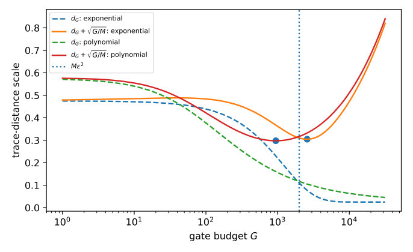
<figcaption class="paper-figure-caption"><b>Fig 1.</b> FIG. 1. Illustrative approximation-estimation tradeoff for M = 5.0 × 104. The dashed curves are stylized approximation errors dG, the solid curves add the statistical radius p</figcaption>
</figure>
<figure class="paper-figure-card">
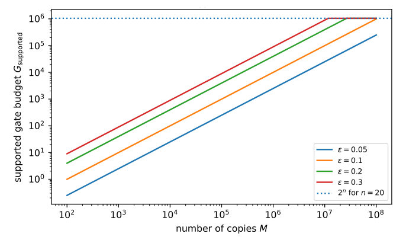
<figcaption class="paper-figure-caption"><b>Fig 2.</b> FIG. 2. Sample-supported expressibility boundary for n = 20. The curves show Gsupported = min{2n, Mε2} for several target accuracies, ignoring logarithmic factors. The horizontal dotted line is the tomography saturation 220.</figcaption>
</figure>
</div>

<p><strong>Summary.</strong> The paper introduces an Occam theory for quantum learning to quantify how much model expressibility (circuit depth $G$) can be reliably inferred from limited quantum samples ($M$). It derives a fundamental law stating that the supported complexity scales as $M\epsilon^2$, thereby transforming circuit design from a static assumption into a data-dependent statistical resource.</p>
<p><strong>Why it may be interesting.</strong> This provides a rigorous, information-theoretic framework for determining when quantum machine learning models are statistically justified by data, which is crucial for designing practical variational quantum algorithms.</p>
<details>
<summary>Detailed structure</summary>
<p><strong>Main problem.</strong> The work develops an information-theoretic Occam theory for quantum machine learning to reconcile the expressive power of quantum circuits with the statistical limitations imposed by finite sample data.</p>
<p><strong>Main result.</strong> It establishes a 'sample-supported expressibility law' showing that the number of gates ($G$) statistically supported by $M$ samples at accuracy $\epsilon$ scales as $G_{	ext{supported}} \simeq M\epsilon^2$, making circuit complexity an adaptive statistical resource.</p>
<p><strong>Method.</strong> The analysis uses metric entropy arguments and structural risk minimization analogues to derive bounds on the achievable error, balancing approximation bias ($d_G(\hat{
ho})$) against a sample-dependent statistical penalty term.</p>
<p><strong>Model / system.</strong> The system involves estimating an unknown quantum state ($\hat{
ho}$) using variational quantum circuits (ansatze) parameterized by a gate count $G$. The learning is performed in the trace distance metric on $n$-qubit systems.</p>
<p><strong>Key observables.</strong> Trace-distance error ($\epsilon$), Approximation Error ($d_G(\hat{
ho})$), and Sample Size ($M$).</p>
<p><strong>Important parameters / regimes.</strong> The relationship $G_{	ext{supported}} \simeq M\epsilon^2$ defines the critical boundary between statistically supported and unsupported model complexity.</p>
<p><strong>Assumptions / limitations.</strong> The analysis relies on bounding the metric entropy of the circuit class using nets to approximate continuous parameter spaces, assuming the learning is performed in an agnostic setting (unknown $\hat{
ho}$).</p>
<p><strong>Figures summary.</strong> Figures illustrate the tradeoff between approximation error and statistical penalty, culminating in a clear visualization of the supported expressibility boundary $G_{	ext{supported}} = \min\{2^n, M\epsilon^2\}$.</p>
<p><strong>Paper structure.</strong> The paper progresses from establishing basic bounds for realizable learning to developing agnostic theorems that incorporate model selection penalties. The final structure culminates in deriving the sample-supported law by minimizing a penalized objective function over circuit complexity.</p>
</details>
<details>
<summary>Abstract</summary>
<p>A central principle in quantum machine learning is that an ansatz should be expressive enough to represent the quantum data of interest. Yet, the expressibility is statistically meaningful only insofar as it can be learned from finitely many copies of an unknown quantum state. In this work, we develop an information-theoretic Occam theory for quantum data generated by finite-size quantum circuits. For the class $S_{n,G}$ of $n$-qubit pure states preparable with at most $G$ two-qubit gates, a metric-entropy argument gives the realizable sample law $\widetildeΘ(G/ε^2)$ in the circuit-limited regime. For an arbitrary source $\hatρ$, we introduce the best $G$-gate approximation error $d_G(\hatρ)$ and the approximate circuit complexity $C_η(\hatρ)$. We prove an agnostic quantum Occam theorem: with $M$ copies, one can learn up to the best $G$-gate approximation error plus a statistical penalty $\widetilde{O}(\sqrt{G/M})$. We then remove the need to know $G$ in advance through an adaptive model-selection theorem whose oracle inequality selects the circuit complexity justified by the data. Matching lower bounds yield a sample-supported expressibility law: at trace-distance accuracy $ε$, $M$ samples can support only $G_{\rm supported} \simeq Mε^2$ gates, up to logarithmic factors and tomography saturation at $2^n$. Thus, the circuit complexity becomes an adaptive statistical resource rather than a static promise. Our framework turns bounded circuit complexity into a model-selection principle for quantum machine learning.</p>
</details>
<p><sub><a href="#top">↑ back to top</a></sub></p>

<p><a id="paper-2606.12222"></a></p>
<h3 id="structural-responses-incipient-to-pressure-driven-antiferromagnetic-quantum-critical-point-of-van-der-waals-heavy-fermion-metal-cesii"><a href="http://arxiv.org/abs/2606.12222v1">Structural responses incipient to pressure-driven antiferromagnetic quantum critical point of van der Waals heavy-fermion metal CeSiI</a></h3>
<p><strong>Authors:</strong> Hanming Ma, Tong Shi, Wenhao Li, Qingxin Dong, Xiaoli Ma, Shaoheng Ruan, Zhongjin Wu, Pengtao Yang, Zhaoming Tian, Jianping Sun, Yoshiya Uwatoko, Xiaohui Yu, Hechang Lei, Bosen Wang, Jinguang Cheng<br>
<strong>Type:</strong> experiment · <strong>Category:</strong> strongly correlated electrons · <strong>PDF:</strong> <a href="https://arxiv.org/pdf/2606.12222v1">https://arxiv.org/pdf/2606.12222v1</a><br>
<strong>Analysis basis:</strong> full PDF text, analyzed in chunks
<strong>Topic relevance:</strong> <code>Kondo &amp; dissipative impurity</code> <strong>1/5</strong></p>
<div class="figure-strip-hint">↔ Scroll figures horizontally</div>
<div class="paper-figures-scroll">
<figure class="paper-figure-card">
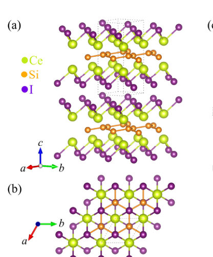
<figcaption class="paper-figure-caption"><b>Fig 1.</b> Figure 1</figcaption>
</figure>
<figure class="paper-figure-card">
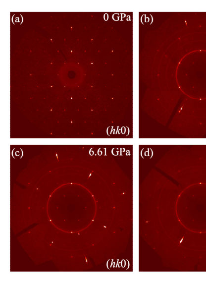
<figcaption class="paper-figure-caption"><b>Fig 2.</b> Figure 2</figcaption>
</figure>
<figure class="paper-figure-card">
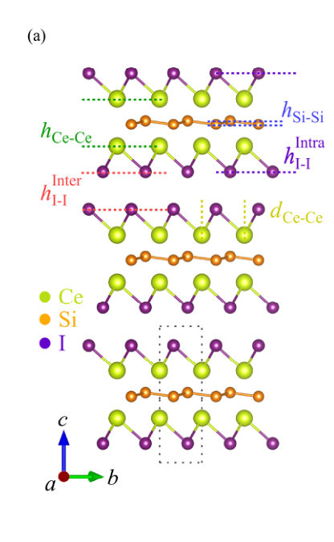
<figcaption class="paper-figure-caption"><b>Fig 3.</b> Figure 3</figcaption>
</figure>
<figure class="paper-figure-card">
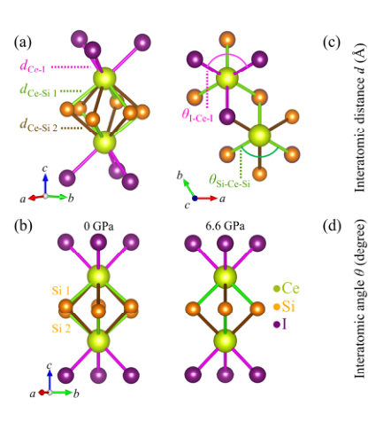
<figcaption class="paper-figure-caption"><b>Fig 4.</b> Figure 4</figcaption>
</figure>
<figure class="paper-figure-card">
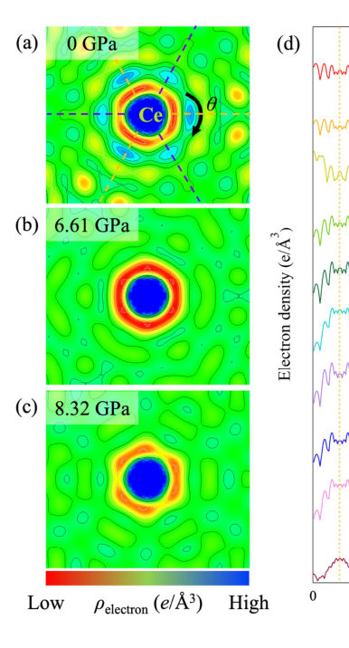
<figcaption class="paper-figure-caption"><b>Fig 5.</b> Figure 5</figcaption>
</figure>
</div>

<p><strong>Summary.</strong> This work uses high-pressure single-crystal X-ray diffraction to investigate the structure of the heavy-fermion metal CeSiI near its antiferromagnetic Quantum Critical Point. The researchers found that while the overall crystal structure remains stable, abrupt anisotropic changes in lattice parameters occur around the critical pressure. These structural anomalies are linked to local bond length and coordination symmetry changes within the material's layers.</p>
<p><strong>Why it may be interesting.</strong> The direct experimental link established between measurable room-temperature structural precursors and a low-temperature electronic QCP provides crucial input for theories describing quantum critical points in correlated materials.</p>
<details>
<summary>Detailed structure</summary>
<p><strong>Main problem.</strong> To understand the structural responses that precede a pressure-driven antiferromagnetic quantum critical point (QCP) in the van der Waals heavy-fermion metal CeSiI.</p>
<p><strong>Main result.</strong> The study found abrupt and concurrent anisotropic lattice parameter changes near the QCP, which are attributed to local structural deformations like flattening of the Si honeycomb layer and changes in Ce-Ce/Ce-Si bond lengths.</p>
<p><strong>Method.</strong> Comprehensive single-crystal X-ray diffraction (SXRD) measurements were performed on high-quality single crystals under pressures up to 8.3 GPa at room temperature.</p>
<p><strong>Model / system.</strong> The physical system is CeSiI, a van der Waals heavy-fermion metal known for unconventional superconductivity near an AF QCP. The structure involves layered components: a Si honeycomb layer sandwiched between Ce and I layers.</p>
<p><strong>Key observables.</strong> Unit-cell volume ($V$), lattice parameters ($a$, $c$), interlayer gaps ($    ext{h}<em ext_Ce-Ce="ext{Ce-Ce">{    ext{I-I}}^{ ext{Inter}}$), intra-layer distances ($ ext{h}</em>$), and bond angles/lengths.}}$, $ ext{h}_{    ext{Si-Si}</p>
<p><strong>Important parameters / regimes.</strong> Pressure range up to 8.3 GPa; critical pressure $P_c \approx 6$ GPa; room temperature measurements.</p>
<p><strong>Assumptions / limitations.</strong> The structural anomalies observed at room temperature are considered incipient precursors to the low-temperature electronic QCP.</p>
<p><strong>Figures summary.</strong> Figures show SXRD patterns, pressure dependence of lattice parameters ($a, c, V$), and detailed evolution plots for various interatomic distances and bond angles across the critical pressure region.</p>
<p><strong>Paper structure.</strong> The paper presents systematic high-pressure SXRD data analysis, first establishing the overall structural stability (no phase transition) while highlighting anomalies in lattice parameters near $P_c$. It then delves into specific atomic interactions (bond lengths, layer heights) to microscopically explain these observed macroscopic structural changes.</p>
</details>
<details>
<summary>Abstract</summary>
<p>CeSiI is a van der Waals heavy-fermion metal recently found to exhibit unconventional superconductivity near a pressure-induced antiferromagnetic quantum critical point (QCP) at Pc =6 GPa. Here, we report a comprehensive single-crystal X-ray diffraction study of CeSiI under high pressures up to 8.3 GPa at room temperature, revealing subtle structural responses that precede pressure-driven QCP. We find that the unit-cell volume decreases smoothly upon compression without showing any structural phase transition in the investigated pressure range. Intriguingly, we observe abrupt and concurrent anisotropic responses of the lattice parameters around Pc =6 GPa, i.e., the a-axis contracts while the c-axis enlongated suddenly, with the unit-cell volume smoothily varies with pressure. Structural refinements further show that these lattice anomalies primarily originate from changes of Ce-Ce and Ce-Si bond lengths, as well as a flattening of the inner honeycomb Si layer within the CeSiI monolayer around Pc. Our findings establish an interesting case linking pressure-driven electronic transition of QCP at low temperatures to incipient structural responses at room temperature, thereby providing fresh insight into the pressure-temperature phase diagram of CeSiI.</p>
</details>
<p><sub><a href="#top">↑ back to top</a></sub></p>

<p><a id="paper-2606.11524"></a></p>
<h3 id="unveiling-the-interplay-of-charge-and-magnetic-excitations-in-hgbamath1006mathcamath1007mathcumath1008mathomath1009math"><a href="http://arxiv.org/abs/2606.11524v1">Unveiling the Interplay of Charge and Magnetic Excitations in HgBa$_2$Ca$_2$Cu$_3$O$_{8+δ}$</a></h3>
<p><strong>Authors:</strong> Karn Rongrueangkul, Martina Fedele, Leonardo Martinelli, Giacomo Merzoni, Roberto Sant, Nicholas B. Brookes, Dorothée Colson, Alain Sacuto, Götz Seibold, Sergio Caprara, Marco Moretti Sala, Giacomo Ghiringhelli, Riccardo Arpaia<br>
<strong>Type:</strong> both · <strong>Category:</strong> strongly correlated electrons · <strong>PDF:</strong> <a href="https://arxiv.org/pdf/2606.11524v1">https://arxiv.org/pdf/2606.11524v1</a><br>
<strong>Analysis basis:</strong> full PDF text, analyzed in chunks
<strong>Topic relevance:</strong> <code>Keldysh / 2PI / non-Gaussian methods</code> <strong>1/5</strong></p>
<div class="figure-strip-hint">↔ Scroll figures horizontally</div>
<div class="paper-figures-scroll">
<figure class="paper-figure-card">
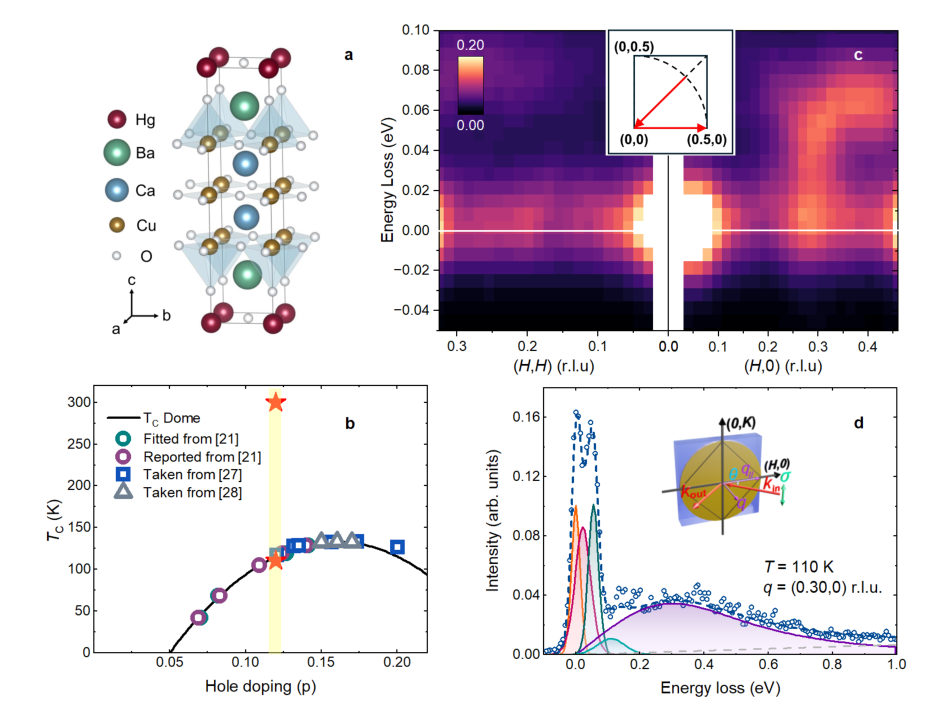
<figcaption class="paper-figure-caption"><b>Fig 1.</b> Figure 1: Crystal structure, phase diagram, and experimental conditions of HgBa2Ca2Cu3O8+δ (Hg1223). (a) Crystal structure of Hg1223. (b) Superconducting dome of Hg1223, with Tc values from samples both as those of our study and from the literature. Their dependence follows a parabolic relationship, without any hint of anomalous Tc suppres- sion in the underdoped region. RIXS spectra were acquired in medium resolution mode at several temperatures between 20 and 300 K (yellow bar), and in high resolution mode at 110 K, i.e., just below the superconducting transition, and at room temperature (stars). (c) High- resolution (∆E = 32 meV) RIXS maps measured at T = 110 K along the (H, 0) and (H,...</figcaption>
</figure>
<figure class="paper-figure-card">
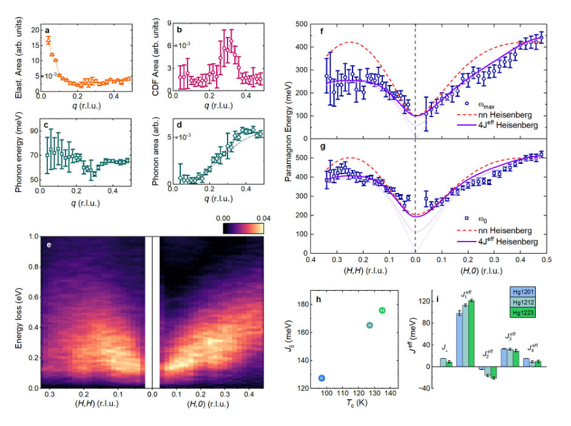
<figcaption class="paper-figure-caption"><b>Fig 2.</b> Figure 2: Charge, lattice, and magnetic excitations in Hg1223 from RIXS. From the fits as a function of momentum along the (H, 0) direction we extract: (a) the area of the elastic line, (b) the area of the CDF peak, (c) the dispersion and (d) the area of the bond- stretching phonons. (e) Inelastic RIXS maps along the (H, 0) and (H, H) directions obtained by subtracting from the raw spectra all low-energy contributions identified in the fits of panels (a–d), so as to single out the spectral weight associated with the paramagnons. (f) Disper- sion of the paramagnon energy ωmax, fitted using both the nearest-neighbour Heisenberg model (dashed line) and a phenomenological linear spin-wave model...</figcaption>
</figure>
<figure class="paper-figure-card">
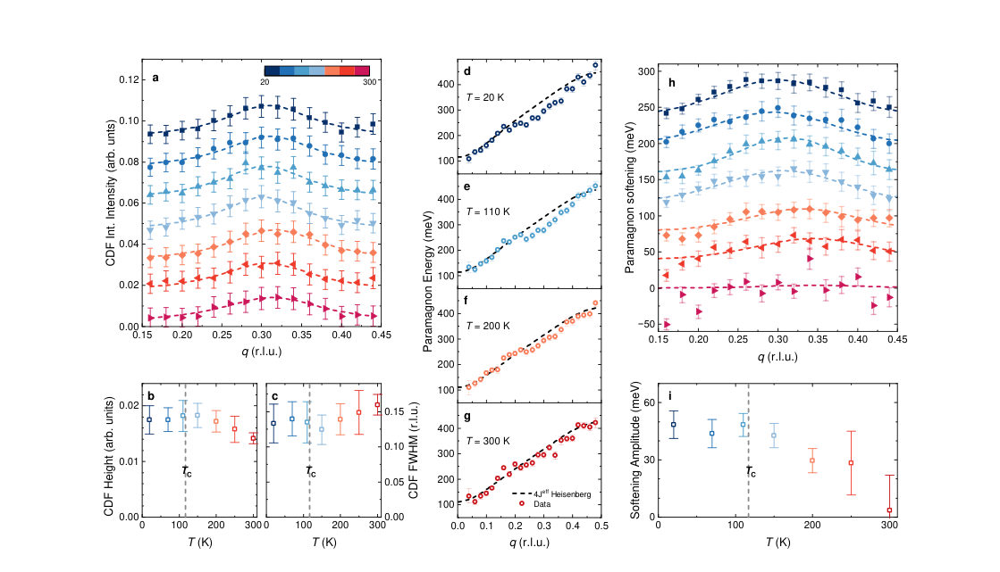
<figcaption class="paper-figure-caption"><b>Fig 3.</b> Figure 3: Interplay of paramagnon softening and charge-density fluctuations. (a) The CDF peak at different temperatures between 20 and 300 K, highlighted by the RIXS inten- sity integrated in the range [–0.1, 0.035] eV. (b,c) Height and FWHM of the Lorentzian profiles used to fit the CDF peak. Both intensity and correlation length increase upon cooling and satu- rate below Tc. (d–g) Paramagnon energy ωmax extracted from the fits at various temperatures, compared with the phenomenological linear spin-wave model including four nearest-neighbour exchange parameters. (h) Paramagnon softening at each temperature, quantified by the de- viation between experimental data and the fitted spin-wave...</figcaption>
</figure>
<figure class="paper-figure-card">
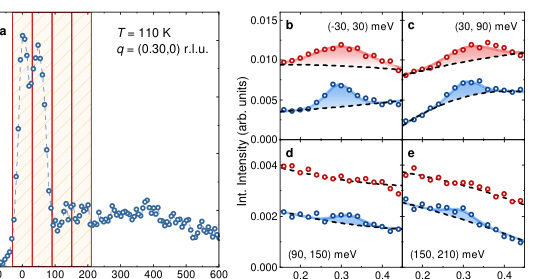
<figcaption class="paper-figure-caption"><b>Fig 4.</b> Figure 4: Broad energy range of charge-density fluctuations overlapping with para- magnons. (a) To assess the energy extent of the CDF peak, each RIXS spectrum was divided into several energy intervals, and the integrated intensity was extracted for each of them. (b–e) Example of this procedure at T = 110 K and 300 K, using 60 meV–wide adjacent intervals cov- ering the range from –30 to 210 meV. While the CDF peak is maximal in the quasi-elastic region [–30, 30] meV, at low temperature it survives up to 210 meV, whereas at room temperature this high-energy component vanishes. (f) To better visualize the evolution of the CDF peak with energy, at T = 110 K the analysis was repeated with 60...</figcaption>
</figure>
<figure class="paper-figure-card">
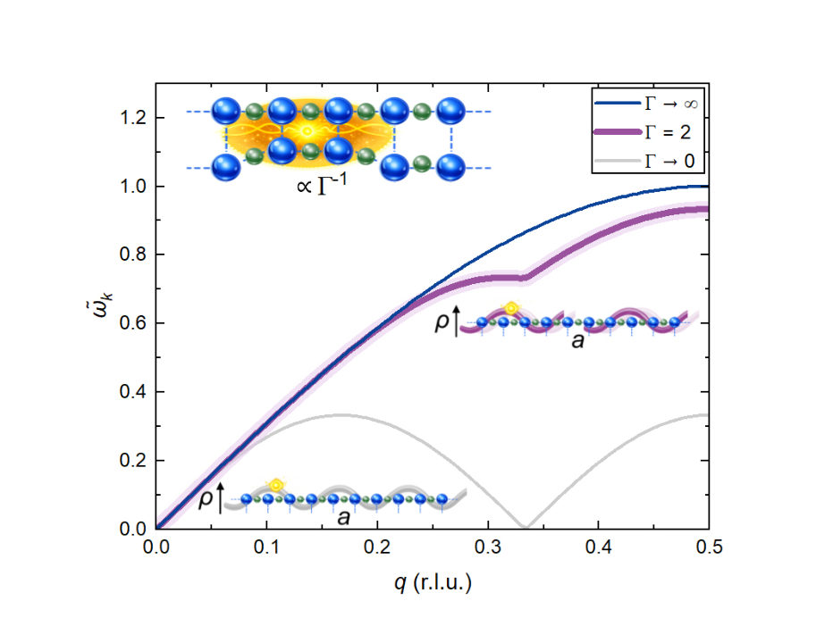
<figcaption class="paper-figure-caption"><b>Fig 5.</b> Figure 5: Phenomenological model for paramagnon softening induced by charge- density fluctuations. Renormalized paramagnon dispersion eωk obtained from the phenomeno- logical self-energy describing the coupling between paramagnons and CDF. The bare dispersion ωk (Γ →∞, blue line) evolves towards the reconstructed dispersion ω′ k (Γ →0, grey line) through an intermediate regime (Γ = 2, violet line), where a pronounced softening develops at qCDF. The parameter Γ captures the dynamical character of the CDF and effectively encodes the strength of the electron–phonon coupling: smaller Γ corresponds to slower, more correlated fluctuations and leads to stronger softening. The upper-left schematic...</figcaption>
</figure>
</div>

<p><strong>Summary.</strong> This research uses RIXS spectroscopy on high-Tc cuprates to investigate the coupling between charge, spin, and lattice excitations. The key finding is that dynamic charge fluctuations mediate this interplay, causing paramagnon softening without implying a competing static CDW order. This suggests a cooperative mechanism underlying high-temperature superconductivity.</p>
<p><strong>Why it may be interesting.</strong> The work provides a concrete mechanism—dynamical charge mediation—that links lattice vibrations, electronic correlations, and magnetic order in a highly complex quantum material, offering insights into emergent collective behavior relevant to strongly correlated physics.</p>
<details>
<summary>Detailed structure</summary>
<p><strong>Main problem.</strong> The central challenge is elucidating the mechanism responsible for forming Cooper pairs (high-Tc superconductivity) in cuprates, specifically by investigating the cooperative interplay between charge, lattice, and spin excitations.</p>
<p><strong>Main result.</strong> Dynamic Charge Density Fluctuations (CDF), extending to high energies, mediate a strong coupling between charge and spin degrees of freedom. This coupling appears to promote superconductivity rather than competing with it, unlike static CDW order.</p>
<p><strong>Method.</strong> The study combines advanced experimental techniques like Resonant Inelastic X-ray Scattering (RIXS) with sophisticated theoretical modeling using Green's functions and phenomenological self-energy calculations.</p>
<p><strong>Model / system.</strong> The primary system is the cuprate superconductor HgBa2Ca2Cu3O(8+delta) (Hg1223). The analysis involves fitting RIXS spectra to extract spectral weights for dynamic charge fluctuations, phonon anomalies, and paramagnon dispersions using theoretical models incorporating electron-phonon coupling.</p>
<p><strong>Key observables.</strong> Dynamic Charge Density Fluctuations (CDF), Paramagnon energy/dispersion ($\omega(\mathbf{k})$), Phonon softening anomaly, and the superconducting critical temperature ($T_c$).</p>
<p><strong>Important parameters / regimes.</strong> The strength of the coupling is parameterized by $\Gamma$ (in theoretical models) or observed through spectral weight changes; key momentum points include $q_{	ext{CDF}} = 0.30 	ext{ r.l.u.}$ along $(	ext{H}, 0)$.</p>
<p><strong>Assumptions / limitations.</strong> The analysis assumes that the high-energy tail of CDF is crucial for coupling to spin excitations, and that phonon softening observed at $q_{	ext{CDF}}$ is due to these dynamic fluctuations rather than static CDW formation.</p>
<p><strong>Figures summary.</strong> Figures illustrate RIXS spectra showing distinct contributions from elastic scattering (CDW/CDF), phonons, and paramagnons across various temperatures and crystal directions, demonstrating the energy overlap between CDF and magnetic excitations.</p>
<p><strong>Paper structure.</strong> The paper progresses by first establishing the experimental observation of coupled fluctuations in Hg1223 using RIXS. It then develops theoretical models (using self-energy corrections) to quantify how dynamic charge fluctuations mediate the observed paramagnon softening, contrasting this with static CDW scenarios.</p>
</details>
<details>
<summary>Abstract</summary>
<p>Unraveling the mechanism that binds electrons into Cooper pairs in cuprate high-temperature superconductors remains one of the most fundamental challenges in condensed-matter physics. While both magnetic interactions and lattice vibrations are known to govern key electronic properties, their possible cooperation has never been directly observed. We investigate HgBa$_2$Ca$_2$Cu$_3$O$_{8+δ}$ (Hg1223) - the cuprate with the highest $T_{\mathrm{c}}$ at ambient pressure - as a magnifying glass to probe the possible entwining of the excitations at the core of the pairing. Using resonant inelastic X-ray scattering, we find that the charge response is dominated by dynamic charge density fluctuations (CDF) extending up to several hundred meV, where magnetic excitations reside. At the same momentum where CDF are most intense, the paramagnon energy exhibits a pronounced softening, revealing a strong interplay among charge, lattice, and spin excitations. Our results point to a cooperative mechanism in which dynamic charge fluctuations mediate the coupling between lattice, charge and spin degrees of freedom-shedding new light on the fundamental origin of high-$T_{\mathrm{c}}$ superconductivity.</p>
</details>
<p><sub><a href="#top">↑ back to top</a></sub></p>
<h2 id="other-papers-8">Other papers (8)</h2>
<p><em>Papers from primary archives without highlighted authors or any topic match. Click to expand.</em></p>
<details>
<summary>Show other papers</summary>

<p><a id="paper-2606.12082"></a></p>
<h3 id="bound-state-solutions-of-the-relativistic-finite-difference-equation-for-the-ring-shaped-quesne-oscillator-potential"><a href="http://arxiv.org/abs/2606.12082v1">Bound State Solutions of the Relativistic Finite-difference Equation for the Ring-shaped Quesne Oscillator Potential</a></h3>
<p><strong>Authors:</strong> Sh. M. Nagiyev, Narmin Nasibova, V. A. Tarverdiyeva, G. H. Guliyeva<br>
<strong>Type:</strong> theory · <strong>Category:</strong> other · <strong>PDF:</strong> <a href="https://arxiv.org/pdf/2606.12082v1">https://arxiv.org/pdf/2606.12082v1</a><br>
<strong>Analysis basis:</strong> full PDF text, analyzed in chunks</p>
<div class="figure-strip-hint">↔ Scroll figures horizontally</div>
<div class="paper-figures-scroll">
<figure class="paper-figure-card">
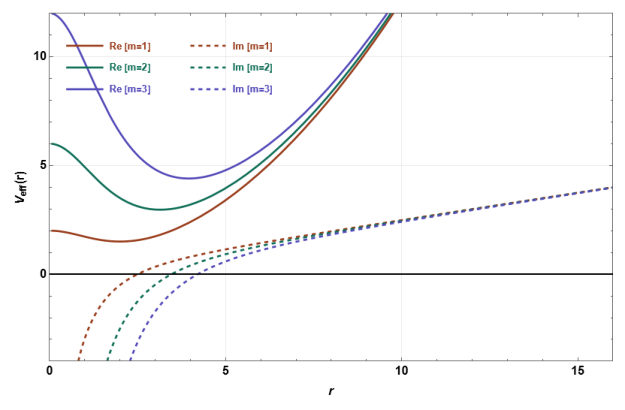
<figcaption class="paper-figure-caption"><b>Fig 1.</b> FIG. 1. Real and imaginary parts of the relativistic ring-shaped Quesne oscillator effective potential Veff(r)</figcaption>
</figure>
<figure class="paper-figure-card">

<figcaption class="paper-figure-caption"><b>Fig 2.</b> Figure 2(a) shows the radial probability density |Rnkm(r)|2 for several values of the radial</figcaption>
</figure>
<figure class="paper-figure-card">
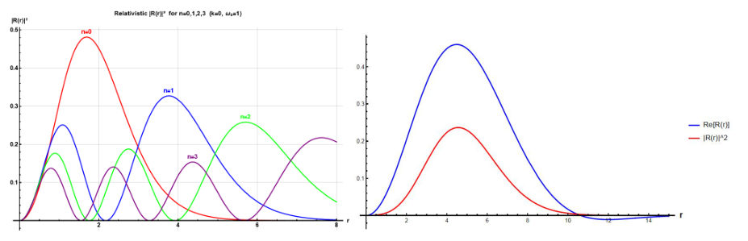
<figcaption class="paper-figure-caption"><b>Fig 3.</b> FIG. 2. (a) Radial probability density |Rnkm(r)|2 as a function of the radial coordinate r for several radial</figcaption>
</figure>
<figure class="paper-figure-card">

<figcaption class="paper-figure-caption"><b>Fig 4.</b> Figure 3(a) illustrates the dependence of the energy levels on α for several values of the angular</figcaption>
</figure>
<figure class="paper-figure-card">

<figcaption class="paper-figure-caption"><b>Fig 5.</b> Figure 3(b) shows the corresponding behavior for different radial quantum numbers n. The</figcaption>
</figure>
</div>
<p><strong>Summary.</strong> This paper solves the relativistic finite-difference equation for a particle confined by a ring-shaped Quesne oscillator potential. By employing advanced mathematical techniques involving dual Hahn and Jacobi polynomials, the authors determine a discrete energy spectrum and reveal an underlying SU(1, 1) dynamical symmetry group. The results confirm the model's physical consistency through its nonrelativistic limit.</p>
<p><strong>Why it may be interesting.</strong> While highly specialized, the use of exactly solvable models with established dynamical symmetries (like SU(1, 1)) provides rigorous theoretical benchmarks for understanding confinement potentials and relativistic corrections in quantum mechanics.</p>
<details>
<summary>Detailed structure</summary>
<p><strong>Main problem.</strong> The study involves finding exact bound state solutions for a relativistic finite-difference equation governing a particle in a ring-shaped Quesne oscillator potential.</p>
<p><strong>Main result.</strong> The analysis yields a discrete energy spectrum, confirms the nonrelativistic limit, and establishes an SU(1, 1) dynamical symmetry group for the radial part of the motion.</p>
<p><strong>Method.</strong> The authors employed separation of variables, solving the angular equation using Gegenbauer polynomials and the radial equation by relating it to continuous dual Hahn polynomials.</p>
<p><strong>Model / system.</strong> The system is a quantum mechanical particle confined by the ring-shaped Quesne oscillator potential, analyzed within a relativistic finite-difference framework. The Hamiltonian structure allows for factorization into terms exhibiting SU(1, 1) symmetry.</p>
<p><strong>Key observables.</strong> Energy eigenvalues ($E_{nk}$), radial probability density $|	ext{R}_{nkm}(r)|^2$, and the 3D spatial probability density $|\psi(x, z)|^2$.</p>
<p><strong>Important parameters / regimes.</strong> The ring-shaped coupling parameter $\alpha$, the relativistic energy scale $m_0c^2$, and quantum numbers $n$ (radial) and $k$ (angular).</p>
<p><strong>Assumptions / limitations.</strong> The analysis assumes specific values for model parameters, and one figure's visualization is restricted to the X-Z plane ($y=0$).</p>
<p><strong>Figures summary.</strong> Figure 2 shows radial probability density vs. radius; Figure 3 illustrates energy eigenvalue dependence on $\alpha$ (vs $k$) and $n$ (vs $n$); Figure 4 displays the 3D spatial probability density in the X-Z plane for increasing angular quantum numbers.</p>
<p><strong>Paper structure.</strong> The paper proceeds by separating variables into radial and angular equations. The angular part is solved using Gegenbauer polynomials, leading to quantization conditions. The radial equation is then tackled using continuous dual Hahn polynomials, resulting in quantized energy levels derived from the symmetry structure.</p>
</details>
<details>
<summary>Abstract</summary>
<p>We solve exactly the relativistic finite-difference equation for the quantum three-dimensional ring-shaped Quesne oscillator potential. Our investigation is based on a finite-difference version of relativistic quantum mechanics. So-called relativistic configurational r-space is a key concept here. We show that the radial wavefunctions and angular wavefunctions are expressed through the continuous dual Hahn polynomials and Jacobi polynomials, respectively. A discrete energy spectrum has been found. The radial wave functions and energy spectrum have the correct nonrelativistic limit. We also build a dynamical symmetry group SU (1, 1) for the radial part of the equation of motion, which allows us to find the energy spectrum purely algebraically.</p>
</details>
<p><sub><a href="#top">↑ back to top</a></sub></p>

<p><a id="paper-2606.11319"></a></p>
<h3 id="learning-from-almost-nothing-how-neural-networks-survive-heavy-input-corruption"><a href="http://arxiv.org/abs/2606.11319v1">Learning from almost nothing: How neural networks survive heavy input corruption</a></h3>
<p><strong>Authors:</strong> Justin Tahmassebpur, Asadullah Bhuiyan, Hyejin Kim, Omri Lesser<br>
<strong>Type:</strong> both · <strong>Category:</strong> disordered systems and neural networks · <strong>PDF:</strong> <a href="https://arxiv.org/pdf/2606.11319v1">https://arxiv.org/pdf/2606.11319v1</a><br>
<strong>Analysis basis:</strong> full PDF text, analyzed in chunks</p>
<div class="figure-strip-hint">↔ Scroll figures horizontally</div>
<div class="paper-figures-scroll">
<figure class="paper-figure-card">
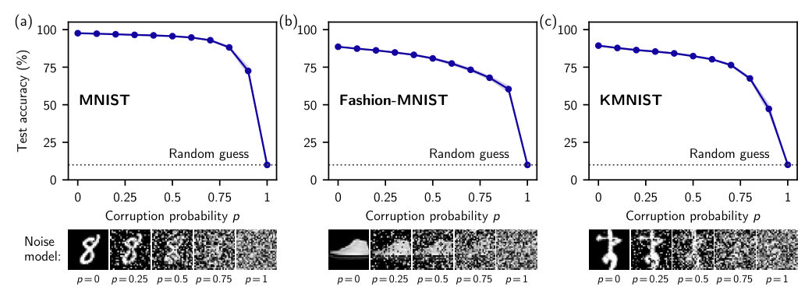
<figcaption class="paper-figure-caption"><b>Fig 1.</b> FIG. 1. Test accuracy vs. corruption probability p for width-128, 3-layer ReLU MLPs trained with cross-entropy loss on images with i.i.d. pixel replacement noise. Three class-balanced datasets are shown: (a) MNIST, (b) Fashion-MNIST, and (c) KMNIST. Below each panel we demonstrate the noise model by showing representative examples of images subject to replacement noise at increasing p. For each p, an MLP is trained on a dataset where each pixel is independently replaced with uniform noise with probability p; the test set is left clean. Accuracy metrics are averaged over 100 independent noisy training realizations per p value, and shaded bands surrounding each curve represent one standard...</figcaption>
</figure>
<figure class="paper-figure-card">
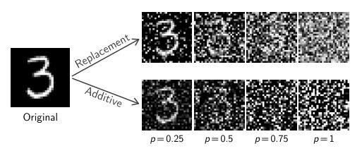
<figcaption class="paper-figure-caption"><b>Fig 2.</b> FIG. 2. Visualization of the two corruption models used in this work applied to an MNIST image. The top panel shows the replacement noise model, where each pixel is indepen- dently replaced with uniform noise with probability p; see Eq. (1). The bottom panel shows the additive noise model, where each pixel is replaced by a convex combination of the clean pixel and an independent noise variable, with mixing parameter p; see Eq. (2). The panels show increasing corrup- tion levels p.</figcaption>
</figure>
<figure class="paper-figure-card">
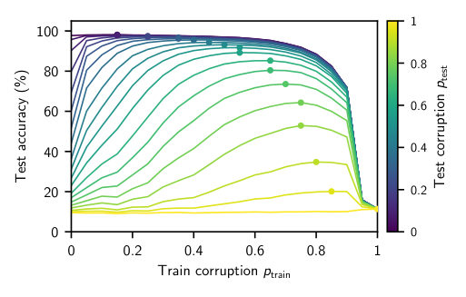
<figcaption class="paper-figure-caption"><b>Fig 3.</b> FIG. 3. Train-time and test-time corruption in MNIST data: Accuracy vs. train corruption level ptrain, for several values of test corruption ptest. We observe a non-monotonic behav- ior, where the optimal ptrain (dots in the figure) is near ptest, rather than 0. All networks and hyperparameters are the same as in Fig. 1.</figcaption>
</figure>
<figure class="paper-figure-card">
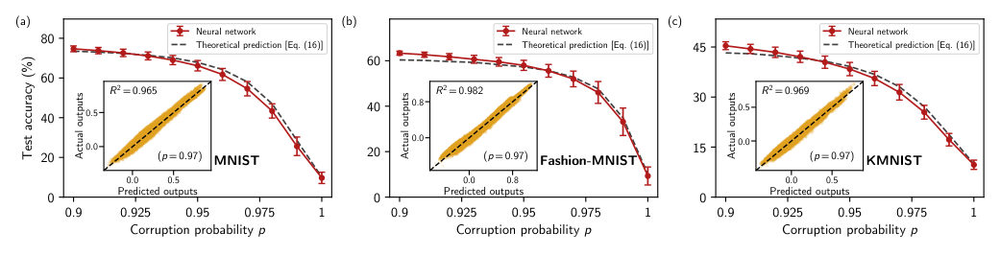
<figcaption class="paper-figure-caption"><b>Fig 4.</b> FIG. 4. Numerical verification of the high-noise theory. All networks used to create the data in this figure are width-2048, 3-layer erf MLPs, trained with mean squared error (MSE) loss on noisy (a) MNIST, (b) Fashion-MNIST, and (c) KMNIST with N = 4000. Main panels: mean clean-test accuracy versus replacement-noise strength p for a nested ensemble of 20 noisy training sets and 10 MLPs per noisy set (red curve). Error bars show one standard deviation. The grey-dashed curve is the mean clean-test accuracy of the fitted effective model in Eq. (16). Insets: output-level comparison at p = 0.97, using a nested ensemble of 100 noisy training sets and 50 MLPs per noisy set. Each point corresponds...</figcaption>
</figure>
<figure class="paper-figure-card">
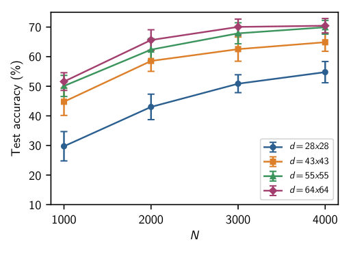
<figcaption class="paper-figure-caption"><b>Fig 5.</b> FIG. 5. Empirical test of the scaling suggested by Eq. (17). Each curve shows the mean clean-test accuracy of an ensemble of width-2048, 3-layer erf MLPs trained with MSE loss on MNIST with replacement noise at p = 0.97, as a function of training-set size N for fixed feature dimension d. Error bars show one standard deviation. Larger values of d are obtained by resizing the original MNIST images using bilinear interpolation.</figcaption>
</figure>
</div>
<p><strong>Summary.</strong> This paper theoretically and empirically demonstrates that neural networks remain remarkably robust when trained on inputs corrupted by heavy noise. By analyzing the system in the infinite-width limit using NTK theory, the authors prove that the network's decision rule collapses to a simple nearest-class-mean classifier, providing an interpretable understanding of learning from severely degraded data.</p>
<p><strong>Why it may be interesting.</strong> This work provides an analytic understanding of generalization in highly noisy regimes, showing that the underlying mechanism reduces to simple geometric averaging (centroiding), which has parallels in physical systems where complex interactions simplify under extreme noise or disorder.</p>
<details>
<summary>Detailed structure</summary>
<p><strong>Main problem.</strong> The paper investigates how well neural networks can learn a classification rule when their input data is heavily corrupted by noise, while the corresponding labels remain perfectly clean.</p>
<p><strong>Main result.</strong> In the high-noise limit, the network's decision boundary simplifies to a universal nearest-class-mean (centroid) classifier, regardless of specific architectural details like depth or activation function.</p>
<p><strong>Method.</strong> The analysis combines theoretical tools from the Neural Tangent Kernel (NTK) framework with perturbation theory and mean-field approximations for infinite-width networks. These are validated against numerical experiments on finite-width MLPs.</p>
<p><strong>Model / system.</strong> The model is a Multi-layer Perceptron (MLP) trained on classification tasks using datasets like MNIST. The core physical concept analyzed is the network's response to input corruption, modeled by additive or replacement noise applied to the features.</p>
<p><strong>Key observables.</strong> Test accuracy vs. corruption probability ($p$), and the derived decision rule which is proportional to the overlap between the test point and class centroids.</p>
<p><strong>Important parameters / regimes.</strong> Corruption probability ($p > 90\%$), network width/depth, and the noise type (additive vs. replacement).</p>
<p><strong>Assumptions / limitations.</strong> The analysis relies on approximations valid in the high-noise limit ($\epsilon 	o 1$) and often assumes i.i.d. data with bounded moments for symmetry arguments.</p>
<p><strong>Figures summary.</strong> Figures demonstrate that test accuracy remains robust even when training inputs are highly corrupted (e.g., $p=0.75$ yields $\sim 80\%-90\%$ MNIST accuracy). Theoretical predictions consistently match empirical results across various noise models and architectures.</p>
<p><strong>Paper structure.</strong> The paper progresses from identifying the core problem (attribute noise) to developing analytical tools (NTK, perturbation theory) to derive a leading-order decision rule. This theoretical derivation is then rigorously tested against extensive numerical simulations covering different corruption types and network parameters.</p>
</details>
<details>
<summary>Abstract</summary>
<p>Learning from imperfect data is a central theme in machine learning, connecting practical questions of robustness to fundamental questions of learnability. Here we examine attribute noise: learning from corrupted inputs while keeping the labels intact, a setting that has received considerably less analytical attention than its label-noise counterpart. We consider two types of corruption models: additive noise and replacement noise. Through experiments with multi-layer perceptrons (MLPs) on corrupted classification datasets, we find that neural networks remain robust, maintaining well-above-chance accuracy even when inputs are &gt;90% corrupted -- far beyond human recognition. To understand this robustness, we analyze infinite-width networks in the heavy-corruption regime using a mean-field-inspired approach and derive a leading-order decision rule for the classification outcome: the network implements a prototype rule, the nearest-class-mean, assigning each test point to the class whose training-set average it most closely resembles. This leading-order decision rule is universal across a broad range of MLP architectures, holding for any depth, as well as a wide class of activation functions and noise distributions. The same centroid mechanism closely matches finite-width network behavior in our experiments and provides an interpretable and analytically tractable account of why learning can succeed even when individual training examples carry almost no signal.</p>
</details>
<p><sub><a href="#top">↑ back to top</a></sub></p>

<p><a id="paper-2606.11530"></a></p>
<h3 id="locally-acting-grover-mixers-for-constraint-preserving-qaoa"><a href="http://arxiv.org/abs/2606.11530v1">Locally Acting Grover Mixers for Constraint-Preserving QAOA</a></h3>
<p><strong>Authors:</strong> Minjin Choi, Dongkeun Lee, Junghee Ryu<br>
<strong>Type:</strong> theory · <strong>Category:</strong> quantum information and computing · <strong>PDF:</strong> <a href="https://arxiv.org/pdf/2606.11530v1">https://arxiv.org/pdf/2606.11530v1</a><br>
<strong>Analysis basis:</strong> full PDF text, analyzed in chunks</p>
<div class="figure-strip-hint">↔ Scroll figures horizontally</div>
<div class="paper-figures-scroll">
<figure class="paper-figure-card">
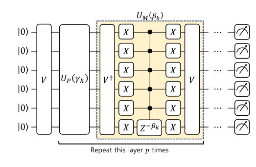
<figcaption class="paper-figure-caption"><b>Fig 1.</b> FIG. 1: Schematic illustration of GM-QAOA. The circuit begins with the state-preparation unitary V, followed by alternating phase- separation unitaries UP(γ) and mixing unitaries UM(β). Here, X rep- resents the Pauli-X gate, and Zϕ is the phase-shift gate defined as Zϕ = |0⟩⟨0| + eiϕ |1⟩⟨1|. The final state is measured in the computa- tional basis to obtain approximate solutions.</figcaption>
</figure>
<figure class="paper-figure-card">
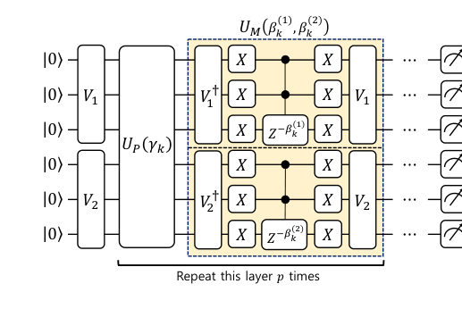
<figcaption class="paper-figure-caption"><b>Fig 2.</b> FIG. 2: Circuit illustration of the product-structured variant of the Grover mixer for an initial state of product form |ψ0⟩= |ψ(1) 0 ⟩⊗|ψ(2) 0 ⟩. The state-preparation unitary decomposes as V = V1⊗V2, where each Vj independently prepares the j-th subsystem state |ψ(j) 0 ⟩. The mix- ing unitary UM(β(1), β(2)) is implemented as two independent blocks, each realized using a multi-controlled phase-shift gate acting within its respective subsystem.</figcaption>
</figure>
<figure class="paper-figure-card">

<figcaption class="paper-figure-caption"><b>Fig 3.</b> FIG. 3: Solution probability as a function of the number of layers p for the exact-cover instance in Eq. (12) using GM-QAOA and the proposed method. For each method and each value of p, the parame- ters are randomly initialized 30 times. The markers indicate the mean solution probability over these runs, and the shaded bands represent the standard deviation. The two methods exhibit comparable conver- gence behavior as p increases.</figcaption>
</figure>
<figure class="paper-figure-card">

<figcaption class="paper-figure-caption"><b>Fig 4.</b> FIG. 4: Solution probability as a function of the number of layers p for the TSP using GM-QAOA and the proposed method. Plots (a), (b), and (c) correspond to three instances of the four-city TSP (nine qubits) with different city locations, as illustrated in the insets, where circles represent cities and the filled circle indicates the starting and ending point of the tour. The simulation setting follows that of Figure 3. Across all three instances, the convergence behavior of the proposed method remains comparable to that of GM-QAOA.</figcaption>
</figure>
<figure class="paper-figure-card">

<figcaption class="paper-figure-caption"><b>Fig 5.</b> FIG. 5: Resource trade-offs between GM-QAOA and the proposed method for TSP instance (a), as a function of the number of layers p. (a) Total number of circuit executions required during optimization. (b) Number of CNOT gates required to implement the mixing unitary, obtained after decomposition into the {RX, RY, RZ, CNOT} gate set. (c) Relative error of the expectation value ⟨HC⟩evaluated by applying a depolarizing noise model with one- and two-qubit gate error rates ϵ1 = 10−4 and ϵ2 = 10−3 to the decomposed mixing unitary. Error bars represent the standard deviation over random parameter samples, and the proposed method has lower relative error with reduced variance.</figcaption>
</figure>
</div>
<p><strong>Summary.</strong> The paper introduces a novel, resource-efficient variant of the Grover mixer for QAOA by exploiting product structures in the initial state preparation. This modification replaces computationally expensive global multi-controlled gates with simpler, local operations on disjoint subsystems. Simulations confirm that this approach maintains convergence quality while drastically reducing circuit overhead, making it more viable for near-term quantum hardware.</p>
<p><strong>Why it may be interesting.</strong> This work directly addresses hardware constraints by proposing structural modifications to quantum algorithms, which is crucial for making variational quantum algorithms practical on NISQ devices. The focus on decomposing global gates into local ones has implications for circuit compilation and noise mitigation in quantum computation.</p>
<details>
<summary>Detailed structure</summary>
<p><strong>Main problem.</strong> The primary challenge is minimizing circuit overhead when applying QAOA to constrained optimization problems on near-term quantum devices.</p>
<p><strong>Main result.</strong> The proposed locally acting Grover mixers achieve convergence comparable to the original method while significantly reducing gate count and circuit depth, especially when using partial constraint encoding for TSP.</p>
<p><strong>Method.</strong> The authors propose replacing the global multi-controlled phase-shift gate in GM-QAOA with local operations by tailoring the mixer to initial states possessing a product structure over disjoint qubit subsystems.</p>
<p><strong>Model / system.</strong> The work is situated within the QAOA framework for solving constrained combinatorial optimization problems, specifically demonstrated on the Exact-Cover Problem and the Traveling Salesman Problem (TSP). The quantum circuit relies on alternating application of cost Hamiltonian evolution ($U_P$) and a modified Grover mixer ($U_M$).</p>
<p><strong>Key observables.</strong> Solution probability vs. number of layers ($p$); Circuit complexity metrics (e.g., CNOT gates, depth); Solution quality.</p>
<p><strong>Important parameters / regimes.</strong> The mixing parameter $eta$; the QAOA layer count $p$; the choice of constraint encoding (full vs. partial).</p>
<p><strong>Assumptions / limitations.</strong> The method's primary advantage relies on the initial state $|\psi_0
angle$ admitting a product structure over disjoint subsystems, which is often achieved by encoding only a subset of constraints.</p>
<p><strong>Figures summary.</strong> Figures illustrate the schematic of GM-QAOA layers and the circuit for the product-structured variant. Comparison plots show solution probability vs. $p$ for both methods on Exact-Cover and TSP instances, demonstrating comparable convergence.</p>
<p><strong>Paper structure.</strong> The paper introduces the limitations of standard GM-QAOA due to global gates; it then proposes the local mixer based on product structure decomposition; results are validated via numerical simulations on benchmark problems (Exact-Cover, TSP), concluding with a comparison of constraint encoding strategies.</p>
</details>
<details>
<summary>Abstract</summary>
<p>The Grover mixer quantum alternating operator ansatz (GM-QAOA) employs the Grover mixer to confine the quantum evolution to the feasible subspace defined by the problem. Its mixing unitary, however, requires a global multi-controlled phase-shift gate acting on all qubits, resulting in substantial circuit overhead on near-term quantum devices. In this work, we propose locally acting Grover mixers tailored to initial states that admit a product structure over disjoint qubit subsystems, which may be obtained by encoding only a subset of problem constraints into the initial state preparation. The proposed method preserves the search space defined by the initial state while significantly lowering implementation cost, as the global multi-controlled phase-shift gate is replaced with local operations on disjoint subsystems. Numerical simulations on the exact-cover problem and the traveling salesman problem (TSP) demonstrate that the proposed method achieves convergence behavior comparable to that of the original GM-QAOA, while using shallower circuits with fewer gates. We further compare two constraint encoding strategies for the TSP, encoding only a subset of constraints versus all constraints into the initial state preparation, and show that the former combined with the proposed mixer yields markedly more compact circuits at the point where comparable solution quality is achieved.</p>
</details>
<p><sub><a href="#top">↑ back to top</a></sub></p>

<p><a id="paper-2606.11468"></a></p>
<h3 id="optimizing-encoder-circuits-of-entanglement-assisted-quantum-ldpc-codes-via-beam-search"><a href="http://arxiv.org/abs/2606.11468v1">Optimizing Encoder Circuits of Entanglement-Assisted Quantum LDPC Codes via Beam Search</a></h3>
<p><strong>Authors:</strong> Aditya Sodhani, Pavan Kumar, Shayan Srinivasa Garani, Keshab K. Parhi<br>
<strong>Type:</strong> theory · <strong>Category:</strong> quantum information and computing · <strong>PDF:</strong> <a href="https://arxiv.org/pdf/2606.11468v1">https://arxiv.org/pdf/2606.11468v1</a><br>
<strong>Analysis basis:</strong> full PDF text, analyzed in chunks</p>
<div class="figure-strip-hint">↔ Scroll figures horizontally</div>
<div class="paper-figures-scroll">
<figure class="paper-figure-card">

<figcaption class="paper-figure-caption"><b>Fig 1.</b> Fig. 1. Architecture of the proposed CNOT-count optimization flow.</figcaption>
</figure>
<figure class="paper-figure-card">

<figcaption class="paper-figure-caption"><b>Fig 2.</b> Fig. 1 summarizes the end-to-end optimization flow, from extracting the SKG CNOT sub-sequence and forming the binary matrix M, to beam-search optimization, CNOT re- construction, and stabilizer-tableau verification. We define the Hamming distance heuristic</figcaption>
</figure>
<figure class="paper-figure-card">

<figcaption class="paper-figure-caption"><b>Fig 3.</b> Fig. 3. Beam-search-optimized encoder circuit for [[9, 4; 1]]: 2 H, 13 CNOTs.</figcaption>
</figure>
<figure class="paper-figure-card">

<figcaption class="paper-figure-caption"><b>Fig 4.</b> Fig. 2. SKG encoder circuit (baseline) for [[9, 4; 1]]: 2 H, 17 CNOTs.</figcaption>
</figure>
<figure class="paper-figure-card">

<figcaption class="paper-figure-caption"><b>Fig 5.</b> Fig. 4. Two CNOT circuits implementing the same encoder matrix M. Sequence A (left) uses 5 gates; Sequence B (right) uses 3.</figcaption>
</figure>
</div>
<p><strong>Summary.</strong> The paper develops a beam search algorithm to minimize the CNOT gate count required for the encoder circuits of EA QC-LDPC codes. By treating the circuit structure as a row decomposition problem over GF(2), the method successfully reduces gate counts by up to 34% compared to existing methods. This research provides a powerful tool for realizing more efficient, hardware-implementable quantum error correction protocols.</p>
<p><strong>Why it may be interesting.</strong> This work directly addresses resource optimization for quantum error correction codes, which is crucial for scaling up fault-tolerant quantum computation architectures.</p>
<details>
<summary>Detailed structure</summary>
<p><strong>Main problem.</strong> The primary goal is optimizing the CNOT gate count in the encoder circuits for Entanglement-Assisted (EA) Quantum Low-Density Parity-Check (QC-LDPC) codes.</p>
<p><strong>Main result.</strong> The proposed beam search method achieves significant CNOT-count reductions of 7.3–34.0% compared to established baseline encoders, demonstrating substantial circuit simplification potential.</p>
<p><strong>Method.</strong> Optimization is framed as finding the shortest sequence of row operations (elementary row-XOR factors) over GF(2) that transforms a derived binary matrix into the identity matrix, solved using a beam search guided by Hamming distance.</p>
<p><strong>Model / system.</strong> The system involves EA QC-LDPC codes utilizing pre-shared Bell pairs. The complexity is analyzed through the CNOT sub-sequence of the encoder circuit, which is modeled as an invertible binary matrix over GF(2).</p>
<p><strong>Key observables.</strong> CNOT count (the primary optimization metric), Circuit Depth, and the percentage reduction relative to baseline encoders.</p>
<p><strong>Important parameters / regimes.</strong> The structure of the code's block-row decomposition ($\ell$) influences the achievable reduction potential.</p>
<p><strong>Assumptions / limitations.</strong> The beam search algorithm does not inherently incorporate scheduling constraints into its objective function, meaning depth reduction is a secondary, non-guaranteed outcome.</p>
<p><strong>Figures summary.</strong> Figures compare SKG baseline circuits (e.g., for [[8, 2; 2]] and [[25, 8; 1]]) with the optimized beam search circuits, visually demonstrating reduced CNOT counts and sometimes reduced circuit depth.</p>
<p><strong>Paper structure.</strong> The paper introduces the problem of encoder complexity in EA QC-LDPC codes. It then details formulating this as a linear algebra problem over GF(2) and applying the beam search algorithm guided by Hamming distance. Finally, it presents results comparing optimized circuits against established baselines (SKG and PMH).</p>
</details>
<details>
<summary>Abstract</summary>
<p>Entanglement-assisted (EA) quantum QC-LDPC codes offer strong error-correction capabilities with structured parity-check matrices, but their practical use depends on efficient encoder circuits and the availability of pre-shared Bell pairs (ebits). In all encoder implementations based on the stabilizer formalism, the dominant contribution to this complexity comes from the use of controlled gates. In this paper, we adopt the Sharma-Kumar-Garani (SKG) encoder construction. We formulate the encoder optimization as a search over GF(2) row operations that decompose the binary matrix derived from its CNOT sub-sequence. We solve this problem using a beam search algorithm guided by a Hamming-distance heuristic. For the tested EA quantum QC-LDPC code families, the proposed method achieves CNOT-count reductions of 7.3-34.0% relative to the SKG baseline encoder. The optimized circuits also yield lower CNOT counts than Patel-Markov-Hayes synthesis on all tested instances and are verified by stabilizer-tableau simulation. These results show that substantial encoder simplification is possible for structured EA QC-LDPC codes.</p>
</details>
<p><sub><a href="#top">↑ back to top</a></sub></p>

<p><a id="paper-2606.12310"></a></p>
<h3 id="partitioned-iterative-quantum-scheduling-of-satellites-for-urgent-disaster-response-case-study-of-wildfire"><a href="http://arxiv.org/abs/2606.12310v1">Partitioned Iterative Quantum Scheduling of Satellites for Urgent Disaster Response: Case study of Wildfire</a></h3>
<p><strong>Authors:</strong> Lucas T. Braydwood, Taejin Park, Hirofumi Hashimoto, Zoe Gonzalez Izquierdo, Andrew Michaelis, Eleanor Rieffel, Shon Grabbe<br>
<strong>Type:</strong> theory · <strong>Category:</strong> quantum information and computing · <strong>PDF:</strong> <a href="https://arxiv.org/pdf/2606.12310v1">https://arxiv.org/pdf/2606.12310v1</a><br>
<strong>Analysis basis:</strong> full PDF text, analyzed in chunks</p>
<div class="figure-strip-hint">↔ Scroll figures horizontally</div>
<div class="paper-figures-scroll">
<figure class="paper-figure-card">

<figcaption class="paper-figure-caption"><b>Fig 1.</b> FIG. 1: (a) Sample GOES-16 FDC imagery from Aug. 18, 2020 at 00:01 UTC. Red denotes an active fire area, green regions with no fire, yellow clouds, and blue water. (b) Corre- sponding WUI image from the U.S. Forest Service [29]. Yellow and orange indicate wildland urban interface and intermix, re- spectively. No housing indicated in dark green and very low housing density shown in medium green. Low and very low housing density in light green, medium and high housing den- sity in maroon, and water indicated in blue.</figcaption>
</figure>
<figure class="paper-figure-card">

<figcaption class="paper-figure-caption"><b>Fig 2.</b> FIG. 2: Lines are orbital tracks in one-second increments for CARTOSAT-2e (blue line), KAZEOSAT-1 (yellow line), and HYSIS (green line) on July 25, 2023. Orbital tracks have been synchronized to pass over the CA coast in unison. Red filled polygons are the intersection of GOES FireTracks data from July 19 – Sept 28, 2020 with the WUI low/med/high data. Rectangles are sample, notional field of views (FOVs).</figcaption>
</figure>
<figure class="paper-figure-card">

<figcaption class="paper-figure-caption"><b>Fig 3.</b> FIG. 3: Simulation results for three different satellites, using the classical algorithms MIN and partitioned MIN as well as two quantum algorithms, both partitioned. The y axis represents the achieved reward of the algorithm divided by the number of requests, with a value of 1 corresponding to satisfying every request from an optimal angle. The data is averaged over all instances for the indicated satellites with higher request simulations coming from longer time bins.</figcaption>
</figure>
</div>
<p><strong>Summary.</strong> This paper tackles the computationally hard problem of scheduling satellites for wildfire monitoring by formulating it as a Maximum Independent Set problem. It proposes using advanced quantum computing paradigms, including iterative and distributed quantum algorithms, to solve this resource allocation challenge. While current simulations show classical methods leading, the methodology advances the theoretical path toward solving utility-scale problems on future quantum hardware.</p>
<p><strong>Why it may be interesting.</strong> The focus on mapping complex combinatorial optimization problems onto structured quantum Hamiltonians ($\hat{C}$) and developing strategies (partitioning, iteration) to handle system sizes beyond current hardware capabilities is highly relevant to the theory of quantum algorithms.</p>
<details>
<summary>Detailed structure</summary>
<p><strong>Main problem.</strong> Developing efficient quantum algorithms to solve the NP-hard problem of scheduling satellite observations for near real-time wildfire tracking.</p>
<p><strong>Main result.</strong> The work validates the utility of iterative and distributed quantum techniques for this resource allocation problem, despite current hardware limitations preventing a demonstrated quantum advantage over classical solvers.</p>
<p><strong>Method.</strong> The scheduling problem is mapped to finding the Maximum Independent Set (MIS) on a graph, which is then formulated as a QUBO/Ising model suitable for QAOA or iterative quantum algorithms.</p>
<p><strong>Model / system.</strong> The system involves coordinating large constellations of satellites observing wildfire targets derived from GOES-16 multi-spectral data. The computational model uses MIS formulation and explores partitioned/distributed quantum processing units (QPUs).</p>
<p><strong>Key observables.</strong> Achieved Reward/Number of Requests; Expectation values ($\langle \sigma^z_i 
angle$); Fire size, Fire Radiative Power (FRP).</p>
<p><strong>Important parameters / regimes.</strong> Lagrange multiplier ($\lambda=2$); Partition size ($m$, limited to $\sim 18$ qubits in simulations); Number of satellites/requests.</p>
<p><strong>Assumptions / limitations.</strong> The current quantum subprocesses are too small to show significant quantum advantage; the scheduling problem is modeled by mapping constraints onto an MIS graph structure.</p>
<p><strong>Figures summary.</strong> Figures illustrate sample GOES-16 fire detection overlaid with WUI data, and compare simulation results of classical greedy vs. partitioned MIN/MINQ/MMQ across varying request numbers.</p>
<p><strong>Paper structure.</strong> The paper progresses from defining the real-world scheduling challenge (wildfire tracking) to formulating it as an MIS problem, then detailing quantum approaches like QAOA and iterative algorithms (MINQ/MMQ), culminating in a methodology for partitioning large problems into manageable sub-problems for distributed computation.</p>
</details>
<details>
<summary>Abstract</summary>
<p>The standard in Earth-observation tasks today is having near real-time access to surface images in response to changing conditions. For instance, as urban environments interface more with wildlands and wildfires become less predictable, their tracking with satellite resources becomes essential. This requires the coordination of increasingly large constellations of satellites, giving rise to challenging computational problems. With wildfire detection and tracking as a backdrop, we investigate the power of special purpose and novel computing paradigms to tackle the ensuing satellite scheduling problems, making a compelling case for quantum algorithms. We bring quantum scheduling algorithms closer to implementation by examining both the emerging iterative quantum algorithm framework, which comes with analytic guarantees compared to some classical algorithms, and distributed quantum computing methods whose relevance is on the rise as utility-scale problems begin to get solved with quantum computers. Drawing strength from several computing fronts, we develop a distributed/parallelization scheme in conjunction with the quantum algorithm design and apply these techniques to real-world datasets for wildfire detection. While our quantum subprocesses are currently too small to see significant quantum advantage, our results validate the utility of these techniques, and continue forging the path toward distributed quantum computing.</p>
</details>
<p><sub><a href="#top">↑ back to top</a></sub></p>

<p><a id="paper-2606.11759"></a></p>
<h3 id="random-grover-search"><a href="http://arxiv.org/abs/2606.11759v1">Random Grover Search</a></h3>
<p><strong>Authors:</strong> Dekuan Dong, Jiaxin Ma, Yingzhou Li<br>
<strong>Type:</strong> theory · <strong>Category:</strong> quantum information and computing · <strong>PDF:</strong> <a href="https://arxiv.org/pdf/2606.11759v1">https://arxiv.org/pdf/2606.11759v1</a><br>
<strong>Analysis basis:</strong> full PDF text, analyzed in chunks</p>
<div class="figure-strip-hint">↔ Scroll figures horizontally</div>
<div class="paper-figures-scroll">
<figure class="paper-figure-card">

<figcaption class="paper-figure-caption"><b>Fig 1.</b> Fig. 1: Partition of the search space into the regions Ij induced by A0, A1, A2.</figcaption>
</figure>
<figure class="paper-figure-card">

<figcaption class="paper-figure-caption"><b>Fig 2.</b> Fig. 2: Projected trajectories onto the (ba3(t), ba0(t))-plane under the averaged evolu- tion matrix M for different values of N, with fixed r = 1, |A0| = 200, and |A1| = 100. The dashed curves represent quarter circles of radius 1, while the solid curves denote the projected trajectories.</figcaption>
</figure>
<figure class="paper-figure-card">

<figcaption class="paper-figure-caption"><b>Fig 3.</b> Fig. 3: Comparison between the deterministic periodic sequence and the correspond- ing randomized strategy under four parameter settings. In each panel, the solid curve represents the deterministic sequence, while the dashed curve shows the empirical mean over 50 independent randomized trials. The vertical dotted line marks the stopping time T, and the dash-dotted vertical line marks the fist peak time t∗ det of the deterministic curve. The corresponding values of t∗ det are 2.6 × 106, 1.8 × 106, 1.3 × 106, and 0.7 × 106 for the four panels, respectively.</figcaption>
</figure>
<figure class="paper-figure-card">

<figcaption class="paper-figure-caption"><b>Fig 4.</b> Fig. 4: Success-probability evolution for different values of δ, with fixed N = 240, |A1| = 100, and r = 1. The solid curves show the empirical averages over 50 indepen- dent trials, while the dashed curve corresponds to repeatedly applying only G0. The vertical dotted line marks the stopping time T.</figcaption>
</figure>
<figure class="paper-figure-card">

<figcaption class="paper-figure-caption"><b>Fig 5.</b> Fig. 5: Numerical results for N = 240, |A0| = 100, |A1| = 200, |A2| = 50, r = 1, and δ ∈{0.005, 0.15, 0.4}. (a) Empirical mean success probability for different values of δ. (b) Corresponding mean usage ratios of G0, G1, and G2.</figcaption>
</figure>
</div>
<p><strong>Summary.</strong> This paper introduces a randomized Grover search algorithm designed to solve problems defined by the intersection of multiple constraints without needing a single, costly global oracle. By randomly applying individual constraint-specific Grover operators, the authors prove that the algorithm maintains the optimal quadratic speedup complexity. This is significant because it offers a practical pathway for implementing quantum searches on complex, modularly constrained systems.</p>
<p><strong>Why it may be interesting.</strong> It provides a powerful algorithmic tool for quantum computation that bypasses major hardware/implementation bottlenecks associated with constructing complex global oracles by leveraging random sampling over simpler components.</p>
<details>
<summary>Detailed structure</summary>
<p><strong>Main problem.</strong> The research addresses the challenge of quantum search algorithms for finding solutions that belong to the intersection of multiple constraint sets, where constructing a single global oracle is computationally expensive.</p>
<p><strong>Main result.</strong> A randomized Grover search algorithm was developed that achieves the same asymptotic query complexity as standard Grover search ($\Theta(\sqrt{N/r})$) without requiring a costly global oracle.</p>
<p><strong>Method.</strong> The method involves stochastically applying randomly selected individual Grover operators corresponding to each constraint set at every iteration, and analyzing the resulting expected quantum evolution.</p>
<p><strong>Model / system.</strong> The model is based on Grover's algorithm applied to search spaces defined by multiple intersecting constraints. The state space is analyzed using a basis derived from membership in these individual constraint sets.</p>
<p><strong>Key observables.</strong> Success probability ($P_{	ext{succ}}(t)$), which measures the likelihood of measuring an element within the target intersection set, and the required number of iterations ($T$).</p>
<p><strong>Important parameters / regimes.</strong> N (total search space size), r (size of the intersection), k (number of constraint sets/operators), and the sampling distribution probabilities $\{p_i\}$.</p>
<p><strong>Assumptions / limitations.</strong> The analysis relies on approximating the expected Grover evolution using auxiliary operators, and certain conditions like $N > (m+r)^2/r$ are required for specific theorems.</p>
<p><strong>Figures summary.</strong> Figures illustrate the projected trajectories of state coefficients in the two-operator case, comparing randomized versus deterministic strategies, showing that random sampling consistently maintains a high success probability near unity.</p>
<p><strong>Paper structure.</strong> The paper progresses by first establishing the problem (intersection search), deriving theoretical bounds for the randomized approach using expectation values, and then rigorously comparing this stochastic method against deterministic sequences to prove its superior asymptotic performance.</p>
</details>
<details>
<summary>Abstract</summary>
<p>Grover's algorithm achieves a quadratic speedup for unstructured search given a global oracle for the target set. In many applications, however, the target set is specified as the intersection of multiple constraint sets. Constructing a global oracle for the intersection can be costly, whereas the individual constraint oracles are often much simpler to implement.   We study a randomized Grover search algorithm that directly uses these constraint oracles. At each iteration, one of the corresponding Grover operators is selected at random. For the two-operator case with uniform sampling, we prove that the success probability approaches one after \[ Θ\left(\frac\pi4\sqrt{\frac{N}{r}}\right) \] iterations, where $r$ is the size of the intersection. Thus, the algorithm achieves the same asymptotic query complexity as standard Grover search but without requiring a global oracle. We then generalize the analysis to arbitrary sampling distributions and an arbitrary number of Grover operators through an auxiliary operator that approximates the expected Grover evolution, while retaining the same asymptotic complexity. We further show that highly biased sampling distributions can still achieve near-unit success probability, enabling cheaper Grover operators to be used more frequently. Finally, we prove asymptotic optimality and support the theoretical results with numerical simulations.</p>
</details>
<p><sub><a href="#top">↑ back to top</a></sub></p>

<p><a id="paper-2606.11383"></a></p>
<h3 id="rolling-stock-planning-using-the-quantum-approximate-optimization-algorithm"><a href="http://arxiv.org/abs/2606.11383v1">Rolling Stock Planning Using the Quantum Approximate Optimization Algorithm</a></h3>
<p><strong>Authors:</strong> Jiří Guth Jarkovský, Patricia Bickert, Elisabeth Wybo, Martin Leib<br>
<strong>Type:</strong> both · <strong>Category:</strong> quantum information and computing · <strong>PDF:</strong> <a href="https://arxiv.org/pdf/2606.11383v1">https://arxiv.org/pdf/2606.11383v1</a><br>
<strong>Analysis basis:</strong> full PDF text, analyzed in chunks</p>
<div class="figure-strip-hint">↔ Scroll figures horizontally</div>
<div class="paper-figures-scroll">
<figure class="paper-figure-card">

<figcaption class="paper-figure-caption"><b>Fig 1.</b> Fig. 1. Results showing the performance of various methods to solve the subgraph MWIS, with subgraph size kept fixed at 20 (and the greedy algorithm III-B1 as a benchmark). The left panel shows the data points from each individual full algorithm run, while the right panel shows the average performance of each method with standard error of the mean (SEM). IQM Emerald refers to results obtained from QAOA runs on IQM Emerald quantum computer. For more details about the solvers, see IV-B.</figcaption>
</figure>
<figure class="paper-figure-card">

<figcaption class="paper-figure-caption"><b>Fig 2.</b> Fig. 2. Results showing the performance (measured by the number of empty kilometers) of the algorithm using the classical exact MWIS solver, as a function of the subgraph size. Linear fit of the data shows a clear trend of improving solution quality with increasing subgraph size.</figcaption>
</figure>
</div>
<p><strong>Summary.</strong> This work applies quantum computing techniques, specifically QAOA, to solve the NP-hard rolling stock planning problem. By reformulating it as a Maximum Weight Independent Set problem, the authors propose a hybrid algorithm that uses divide-and-conquer strategies to tackle large instances. The results suggest that integrating near-term quantum solvers can effectively improve solutions over purely classical or approximate methods.</p>
<p><strong>Why it may be interesting.</strong> It provides a concrete, real-world optimization application for near-term quantum algorithms like QAOA, demonstrating how quantum computation can be integrated into classical combinatorial problem-solving frameworks.</p>
<details>
<summary>Detailed structure</summary>
<p><strong>Main problem.</strong> The paper tackles rolling stock planning, a complex optimization problem in railway management that is mathematically formulated as finding a Maximum-Weight Independent Set (MWIS) on a large graph.</p>
<p><strong>Main result.</strong> A hybrid quantum-classical framework was proposed, showing that increasing the size of subgraphs solved by QAOA generally improves solution quality compared to purely approximate methods.</p>
<p><strong>Method.</strong> The core method is a divide-and-conquer approach where the MWIS problem on large subgraphs is addressed using the Quantum Approximate Optimization Algorithm (QAOA), orchestrated by classical heuristics.</p>
<p><strong>Model / system.</strong> The system models a railway network with 190 trips over two days. The optimization graph nodes represent feasible train cycles, and edges connect conflicting cycles, leading to an MWIS formulation.</p>
<p><strong>Key observables.</strong> Solution quality (minimizing empty kilometers) and resource consumption (number of trains required/fleet size).</p>
<p><strong>Important parameters / regimes.</strong> Number of trips ($N=190$), maximum cycle length ($ ext{lmax}=4000  ext{ km}$), QAOA depth parameter ($p$).</p>
<p><strong>Assumptions / limitations.</strong> The model assumes unlimited parking capacity and relies on a hybrid approach to manage the computational complexity, as exhaustive enumeration of cycles is prohibitive.</p>
<p><strong>Figures summary.</strong> Figure 1 compares solver performance for small subgraphs; Figure 2 shows that larger subgraphs lead to better solutions (less empty kilometers).</p>
<p><strong>Paper structure.</strong> The paper first formulates the problem as MWIS. It then proposes a hybrid divide-and-conquer algorithm, detailing subgraph selection heuristics and applying QAOA on these smaller instances before iteratively updating the global graph.</p>
</details>
<details>
<summary>Abstract</summary>
<p>Rolling stock planning is a complex optimization problem in railway management that involves assigning physical trains to scheduled trips while minimizing operational costs. In this work, we address a specific instance of this problem featuring 190 trips over two days, subject to constraints such as mandatory maintenance stops. We reformulate the problem as a Maximum-Weight Independent Set (MWIS) problem on a graph where nodes represent feasible train cycles. To handle the computational complexity of the large search space, we propose a hybrid divide-and-conquer algorithm. This approach iteratively selects subgraphs and solves the MWIS problem using various solvers, including exact classical methods and the Quantum Approximate Optimization Algorithm (QAOA). We evaluate the algorithm's performance by comparing these methods and analyzing the scaling with respect to subgraph size, with QAOA assessed through both classical simulation and execution on a quantum device (IQM Emerald). Our results indicate that increasing the subgraph size generally improves solution quality, demonstrating that the hybrid framework can effectively bridge the gap between polynomial-time approximate solvers and exponential-time exact methods.</p>
</details>
<p><sub><a href="#top">↑ back to top</a></sub></p>

<p><a id="paper-2606.12383"></a></p>
<h3 id="the-simplified-stabilizer-zx-calculus-is-minimal"><a href="http://arxiv.org/abs/2606.12383v1">The Simplified Stabilizer ZX-Calculus is Minimal</a></h3>
<p><strong>Authors:</strong> Harry K. Stoltz<br>
<strong>Type:</strong> theory · <strong>Category:</strong> quantum information and computing · <strong>PDF:</strong> <a href="https://arxiv.org/pdf/2606.12383v1">https://arxiv.org/pdf/2606.12383v1</a><br>
<strong>Analysis basis:</strong> full PDF text, analyzed in chunks</p>
<div class="figure-strip-hint">↔ Scroll figures horizontally</div>
<div class="paper-figures-scroll">
<figure class="paper-figure-card">

<figcaption class="paper-figure-caption"><b>Fig 1.</b> Low-resolution page preview, page 2</figcaption>
</figure>
<figure class="paper-figure-card">

<figcaption class="paper-figure-caption"><b>Fig 2.</b> Low-resolution page preview, page 3</figcaption>
</figure>
<figure class="paper-figure-card">

<figcaption class="paper-figure-caption"><b>Fig 3.</b> Low-resolution page preview, page 4</figcaption>
</figure>
<figure class="paper-figure-card">

<figcaption class="paper-figure-caption"><b>Fig 4.</b> Low-resolution page preview, page 5</figcaption>
</figure>
<figure class="paper-figure-card">

<figcaption class="paper-figure-caption"><b>Fig 5.</b> Low-resolution page preview, page 6</figcaption>
</figure>
</div>
<p><strong>Summary.</strong> The paper proves that the rule set defining the Simplified Stabilizer ZX-Calculus is mathematically minimal. By constructing countermodels using complex matrices and dual number algebras, the authors demonstrate that two specific rules—the red/green coincidence and the bialgebra law—are individually necessary components of the calculus's structure. This establishes a complete and non-redundant set of rewrite rules for this quantum formalism.</p>
<p><strong>Why it may be interesting.</strong> This work provides fundamental structural results about the underlying mathematical formalism of quantum computation, which can guide the development of more efficient and minimal computational models for quantum algorithms.</p>
<details>
<summary>Detailed structure</summary>
<p><strong>Main problem.</strong> To rigorously prove that every rewrite rule within the Simplified Stabilizer ZX-Calculus ($   ext{ZX}_{   ext{simp}}$) is individually necessary relative to the connectivity meta-rule.</p>
<p><strong>Main result.</strong> The authors establish that both the red/green compact-structure coincidence rule ($(	ext{S3}'	ext{R})$) and the bialgebra law rule ($(	ext{B2}')$) are necessary, proving that the entire set of rules in $ ext{ZX}_{   ext{simp}}$ is minimal.</p>
<p><strong>Method.</strong> The necessity proofs employ countermodel-style arguments, utilizing algebraic structures such as ordinary complex matrices ($\mathbb{C}$) and categories over dual numbers ($\mathbb{R}_5$) to derive contradictions if any rule were assumed redundant.</p>
<p><strong>Model / system.</strong> The theory concerns the ZX calculus, a graphical language used for reasoning about quantum computation, specifically focusing on its stabilizer fragment. The analysis is performed using algebraic interpretations of the rules within specific mathematical models ($\mathbb{C}$ or $ ext{R}_5$).</p>
<p><strong>Key observables.</strong> Consistency checks derived from comparing coefficients (e.g., in $\mathbb{C}$ for $(	ext{S3}'	ext{R})$ or in $\mathbb{R}_5$ for $(	ext{B2}')$) between the left and right sides of the rewrite rules.</p>
<p><strong>Important parameters / regimes.</strong> The analysis involves specific algebraic structures like complex numbers ($\mathbb{C}$) and the ring of dual numbers over $\mathbb{F}_5$, $R_5 = \mathbb{F}_5[\delta]/(\delta^2)$.</p>
<p><strong>Assumptions / limitations.</strong> The necessity proofs rely on constructing suitable interpretations (functors) that capture the constraints of the calculus within the chosen algebraic settings.</p>
<p><strong>Figures summary.</strong> Not specified, but the notes reference Table 1 listing the rules in $  ext{ZX}<em n_m="n,m">{   ext{simp}}$ and details about spider interpretations ($ ext{Z}'^k</em>$).</p>
<p><strong>Paper structure.</strong> The paper systematically addresses the necessity of individual rules. It first proves $(	ext{S3}'	ext{R})$ is necessary using complex matrices, followed by a detailed construction in the $   ext{C}_5$ model over $\mathbb{R}_5$ to prove that $(B2')$ is necessary.</p>
</details>
<details>
<summary>Abstract</summary>
<p>The stabilizer fragment of the ZX calculus is amongst the most important fragments of the theory. The closely related Clifford+T fragment is approximately universal (arXiv:1705.11151). Additionally, the stabilizer calculus can be described by a small collection of rewrites, most of which have been shown to be necessary (arXiv:1709.08903). However, two rules, describing the red/green compact-structure coincidence and the important bialgebra law, had not been shown to be necessary. We present a countermodel-style argument showing that both of these rules are individually necessary relative to the connectivity meta-rule of Backens--Perdrix--Wang (arXiv:1709.08903), and hence establish that the rule set presented in arXiv:1709.08903 has no redundant rewrite rule.</p>
</details>
<p><sub><a href="#top">↑ back to top</a></sub></p>
</details>
<h2 id="secondary-cond-mat-archives">Secondary cond-mat archives</h2>
<p><em>Papers from cond-mat.mtrl-sci, mes-hall, other, soft, supr-con. These archives are de-prioritized — they appear at the end regardless of relevance score.</em></p>
<h3 id="relevant-in-secondary-archives-20">Relevant in secondary archives (20)</h3>

<p><a id="paper-2606.11904"></a></p>
<h3 id="intrinsic-nonreciprocity-in-electron-phonon-interaction-driven-thermoelectric-diodes"><a href="http://arxiv.org/abs/2606.11904v1">Intrinsic Nonreciprocity in Electron-Phonon Interaction Driven Thermoelectric Diodes</a></h3>
<p><strong>Authors:</strong> Hao-Kun Ke, Lie-Run Tian, Jun-Feng Liu, Pei-Hao Fu, Jun Wang, H. Xu<br>
<strong>Type:</strong> theory · <strong>Category:</strong> statistical mechanics · <strong>PDF:</strong> <a href="https://arxiv.org/pdf/2606.11904v1">https://arxiv.org/pdf/2606.11904v1</a><br>
<strong>Analysis basis:</strong> full PDF text, analyzed in chunks
<strong>Topic relevance:</strong> 🔥 <code>non-equilibrium dynamics</code> <strong>4/5</strong> · <code>Keldysh / 2PI / non-Gaussian methods</code> <strong>3/5</strong> · <code>driven-dissipative phase transition</code> <strong>3/5</strong> · <code>methods for driven-dissipative</code> <strong>3/5</strong> · <code>non-equilibrium universality</code> <strong>2/5</strong> · <code>Kondo &amp; dissipative impurity</code> <strong>1/5</strong> · <code>analog quantum simulation</code> <strong>1/5</strong> · <code>correlated / nonlocal dissipation</code> <strong>1/5</strong></p>
<div class="figure-strip-hint">↔ Scroll figures horizontally</div>
<div class="paper-figures-scroll">
<figure class="paper-figure-card">

<figcaption class="paper-figure-caption"><b>Fig 1.</b> FIG. 1. (a) Device Schematic: A nanowire (NW) is connected to the L and R leads, comprising three regions: a tunneling junction (region 1, length L1) with a resonance energy level E0; an e-ph interaction region (region 2, length Lph) charac- terized by temperature Tph, scattering intensity D0, phonon energy ℏω; an elastic dephasing resistor (region 3, length Lp) with scattering intensity Dp of zero-energy phonons. (b-c) Schematic diagrams of electron transport processes with e-ph interaction for novel and conventional thermoelectric effect, repectively. The average temperature of the L and R leads is T = (TL + TR)/2. In (b), TL = TR = T and ∆T = |T −Tph|. In (c), Tph = T and δT = |TL −TR|....</figcaption>
</figure>
<figure class="paper-figure-card">

<figcaption class="paper-figure-caption"><b>Fig 2.</b> FIG. 2. The charge currents J± and the nonreciprocal effi- ciencies ηN or ηC as functions of the temperature difference ∆T or δT for the novel (a) and (b) or conventional (c) and (d) thermoelectric effect. Various average temperatures T are considered. The other parameters are: Lph = 10, L1 = 6, ℏω = 5 meV and D0 = 1. J0 = 10−3e2V/h.</figcaption>
</figure>
<figure class="paper-figure-card">

<figcaption class="paper-figure-caption"><b>Fig 3.</b> FIG. 3. The charge current, the resistance, and the nonreciprocal efficiency as functions of Lp for the novel thermoelectric effect (a)-(c), and the conventional thermoelectric effect (d)-(f), respectively. Systems N1, N2 (C1, C2), and system 0 are considered in the novel (conventional) thermoelectric effect. In system 0, δT = 100K, ∆T = 0, D0 = 0. In system N1 (N2), ∆T = 60K (100K), δT = 0, D0 = 1. In system C1 (C2), T = 60K (100K), δT = 100K, ∆T = 0, D0 = 1. D0 = Dp = 1. The other parameters are: Lph = 10, L1 = 6, ℏω = 5 meV, Dp = 1, R0 = h/e2.</figcaption>
</figure>
</div>

<p><strong>Summary.</strong> This work theoretically examines how intrinsic asymmetry in electron-phonon interactions can create highly efficient thermoelectric diodes. The key finding is that this nonreciprocity generates novel current pathways and suppresses resistive losses, potentially leading to energy conversion devices superior to those relying on topological or superconducting effects.</p>
<p><strong>Why it may be interesting.</strong> It deals with non-equilibrium energy transport driven by coupling to a bosonic bath (phonons) in a mesoscopic structure, which touches upon open quantum systems dynamics and thermalization processes.</p>
<details>
<summary>Detailed structure</summary>
<p><strong>Main problem.</strong> Investigating intrinsic nonreciprocity in electron-phonon (e-ph) interaction driven thermoelectric diodes, challenging assumptions about the origin of nonreciprocal transport.</p>
<p><strong>Main result.</strong> The intrinsic nonreciprocity leads to two novel phenomena: a new thermoelectric effect dependent on the temperature difference between leads and the central region, and the suppression of electronic backscattering that breaks Ohm's law.</p>
<p><strong>Method.</strong> Theoretical calculation using Green's functions (retarded) incorporating e-ph interaction self-energy ($\Sigma_{ph}$) within a 1D lattice model.</p>
<p><strong>Model / system.</strong> A nanowire modeled as a 1D tight-binding lattice, featuring three regions: a tunneling junction ($L_1$), an inelastic e-ph interaction region ($L_{ph}$), and a dephasing resistor ($L_p$).</p>
<p><strong>Key observables.</strong> Charge current ($J$), nonreciprocal efficiency ($\eta_N$), downstream resistance ($
ho$), and thermoelectric current.</p>
<p><strong>Important parameters / regimes.</strong> Temperature difference ($\Delta T$ or $\delta T$), phonon frequency ($\omega$), hopping energy ($t$), and resonance energy ($E_0$).</p>
<p><strong>Assumptions / limitations.</strong> The nonreciprocity arises from the inherent asymmetry between phonon emission and absorption probabilities, independent of reversing external temperature biases.</p>
<p><strong>Figures summary.</strong> Figures illustrate device schematics, current/efficiency vs. $\Delta T$ or $\delta T$, and resistance/current dependence on the length of the dephasing region ($L_p$).</p>
<p><strong>Paper structure.</strong> The paper establishes the model, derives the intrinsic nonreciprocity mechanism from phonon statistics, analyzes two distinct transport regimes (novel $\Delta T$ bias vs. conventional $\delta T$ bias), and quantifies resulting phenomena like resistance suppression.</p>
</details>
<details>
<summary>Abstract</summary>
<p>We study an electron-phonon interaction driven thermoelectric diode. The nonreciprocity in this diode arises from the asymmetry between the probabilities of phonon emission and absorption in the electron-phonon interaction, as well as the structural reflection asymmetry. We reveal the intrinsic nature of this nonreciprocity, as the forward and backward electron transport remains asymmetric even when the applied temperature difference is not reversed. This intrinsic nonreciprocity gives rise to two novel transport phenomena. One is a novel thermoelectric effect which is driven by the temperature difference between the leads and the central device region, rather than the conventional temperature difference between the two leads. The second, and more significant, phenomenon is the suppression of electronic backscattering in the load resistor. This suppression decreases the resistance of the load resistor, which leads to the breakdown of Ohm's addition law. Under suitable conditions, the presence of electron-phonon interaction can yield a larger thermoelectric current compared to the case without it. This intrinsic nonreciprocity opens up a new pathway for low-power electronics besides topology and superconductivity, and for nonreciprocal thermoelectric devices.</p>
</details>
<p><sub><a href="#top">↑ back to top</a></sub></p>

<p><a id="paper-2606.12304"></a></p>
<h3 id="deterministic-single-photon-emitter-arrays-in-hexagonal-boron-nitride-by-carbon-assisted-focused-ion-beam-engineering"><a href="http://arxiv.org/abs/2606.12304v1">Deterministic Single-Photon Emitter Arrays in Hexagonal Boron Nitride by Carbon-Assisted Focused Ion Beam Engineering</a></h3>
<p><strong>Authors:</strong> Mangababu Akkanaboina, Rohit Kumar, Brijesh Kumar, Hrushikesh Gawali, Parul Sharma, Ikshvaku Shyam, Anshuman Kumar<br>
<strong>Type:</strong> experiment · <strong>Category:</strong> quantum information and computing · <strong>PDF:</strong> <a href="https://arxiv.org/pdf/2606.12304v1">https://arxiv.org/pdf/2606.12304v1</a><br>
<strong>Analysis basis:</strong> full PDF text, analyzed in chunks
<strong>Topic relevance:</strong> 🔥 <code>QC/QI experiment</code> <strong>4/5</strong> · <code>quantum optics experiment</code> <strong>3/5</strong> · <code>analog quantum simulation</code> <strong>1/5</strong></p>
<div class="figure-strip-hint">↔ Scroll figures horizontally</div>
<div class="paper-figures-scroll">
<figure class="paper-figure-card">

<figcaption class="paper-figure-caption"><b>Fig 1.</b> FIG. 1. a) Schematic representation of sample preparation where the first step was milling the mechanically exfoliated hBN flake of thickness 120 nm using Ga+-ion based FIB, followed by selective carbon deposition at the milled spot and subsequent annealing at 850 ◦C in an Ar environment. b) Optical microscope image of the processed hBN flake. c) AFM topography of the FIB-milled region marked by yellow rectangle in (b). d) Corresponding AFM height profile extracted across the milled spots, revealing a milling depth of ∼40 nm.</figcaption>
</figure>
<figure class="paper-figure-card">

<figcaption class="paper-figure-caption"><b>Fig 2.</b> FIG. 2. (a) Optical image of the milled spots where PL map is performed, (b) its corresponding PL map generated at a wavelength of 581 nm depicting luminescent array of milled spots. Statistical analysis of all 10 × 10 milled spots is shown in (c), (d), and (e). The scatter plot in (d) displays ZPL wavelengths of 89 emitters found with in 10×10 milled spots on Y-axis and their corresponding FWHM on X-axis, (C) displays the histogram of counts (number of emitters) vs FWHM, and (e) histogram of number of emitters vs wavelength</figcaption>
</figure>
<figure class="paper-figure-card">

<figcaption class="paper-figure-caption"><b>Fig 3.</b> FIG. 3. Confirmation of quantum emitters. (a) PL spectra of four different emitters identified in the mapped region. (b-e) Second-order autocorrelation measurements, g(2)(τ), of the corresponding emitters shown in (a), confirming their single-photon emission characteristics.</figcaption>
</figure>
<figure class="paper-figure-card">

<figcaption class="paper-figure-caption"><b>Fig 4.</b> FIG. 4. Optical stability and performance metrics of emitters: (a) Temporal stability measurement under continuous excitation, recorded over 5 min with a time bin of 0.5 s. (b) Second-order correlation g(2)(0) as a function of excitation power ranging from 0.5 to 4 mW, confirming single-photon emission behavior. (c) Second-order correlation g(2)(0) and characteristic antibunching time as a function of power. (d) Power-dependent photoluminescence saturation curve of the emitter.</figcaption>
</figure>
</div>

<p><strong>Summary.</strong> The authors report a breakthrough lithography-free technique using focused ion beam milling and carbon deposition to deterministically create arrays of single-photon emitters in hBN. By achieving high site yield and confirming single-photon purity via $g^{(2)}$ measurements, this work establishes a scalable platform crucial for integrated quantum optical circuits.</p>
<p><strong>Why it may be interesting.</strong> This work directly addresses a key hardware bottleneck for integrated quantum photonics by providing a scalable, direct-write pathway to high-quality SPE sources in 2D materials.</p>
<details>
<summary>Detailed structure</summary>
<p><strong>Main problem.</strong> The challenge is creating scalable, deterministic single-photon emitters (SPEs) at room temperature within van der Waals materials for on-chip quantum photonic circuits.</p>
<p><strong>Main result.</strong> A novel, lithography-free three-step process was developed to deterministically generate SPE arrays in hBN with high site-correlated yields ($\sim 89\%$) and confirmed single-photon purity ($g^{(2)}(0) = 0.15 \pm 0.09$).</p>
<p><strong>Method.</strong> The method involves a sequential fabrication process: Gallium focused ion beam milling, followed by conformal carbon deposition, and final thermal annealing.</p>
<p><strong>Model / system.</strong> The physical platform is hexagonal boron nitride (hBN) hosting defect-related SPEs. The emission dynamics are analyzed using a three-level emitter model to fit the second-order autocorrelation function $g^{(2)}(	au)$.</p>
<p><strong>Key observables.</strong> Second-order autocorrelation function ($g^{(2)}(0)$), Zero-Phonon-Line (ZPL) wavelength ($\sim 581 	ext{ nm}$), and site-correlated emitter yield.</p>
<p><strong>Important parameters / regimes.</strong> Annealing temperature ($850^\circ	ext{C}$), milling depth ($\sim 40 	ext{ nm}$), and the single-photon purity threshold ($g^{(2)}(0) < 0.5$).</p>
<p><strong>Assumptions / limitations.</strong> The precise microscopic origin of the emitting centers is not fully resolved, and defect migration during annealing is assumed to follow classical diffusion theory.</p>
<p><strong>Figures summary.</strong> Figures illustrate the three-step fabrication process (milling $
ightarrow$ carbon deposition $
ightarrow$ annealing), PL maps showing emission spots, and $g^{(2)}(	au)$ measurements confirming single-photon antibunching for representative emitters.</p>
<p><strong>Paper structure.</strong> The paper details the necessity of deterministic SPEs, presents the novel three-step fabrication protocol, characterizes the resulting arrays using PL mapping and quantum correlation measurements ($g^{(2)}$), and validates the method's reproducibility.</p>
</details>
<details>
<summary>Abstract</summary>
<p>The realization of on-chip photonic circuits requires scalable and deterministic single-photon emitters (SPEs) at room temperature, which remain a challenge in van der Waals materials. In this work, we report a novel three-step fabrication process for the generation of spatially controlled SPE arrays in hexagonal boron nitride (hBN). The process comprises site-selective gallium (Ga) focused ion beam milling, nanoscale conformal carbon deposition over the patterned regions, and subsequent thermal annealing. The synergistic combination of these steps resulted in a site-correlated emitter yield of ($\sim 89\%$) across 100 fabrication sites. Second-order autocorrelation measurements revealed pronounced three-level emitter dynamics where the best emitters exhibited high purity ($g^{(2)}(0)=0.15 \pm 0.09$).To the best of our knowledge, this is the first lithography-free, direct-write approach combining Ga-ion milling, selective carbon engineering, and thermal annealing to deterministically generate \hBN{} \SPE{}s. The reproducibility of the method is validated across multiple independently fabricated samples. These results establish a scalable, lithography-free pathway toward on-demand SPE arrays relevant to integrated quantum photonics.</p>
</details>
<p><sub><a href="#top">↑ back to top</a></sub></p>
<hr>
<p>
<a href="index.html">← Index</a>
 · <a href="papers_04.html">← Previous</a> · <a href="papers_06.html">Next →</a>
</p>
<hr>

</body>
</html>
